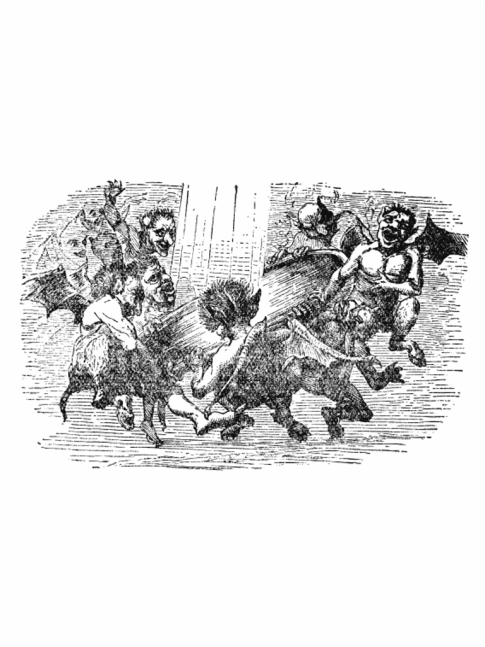
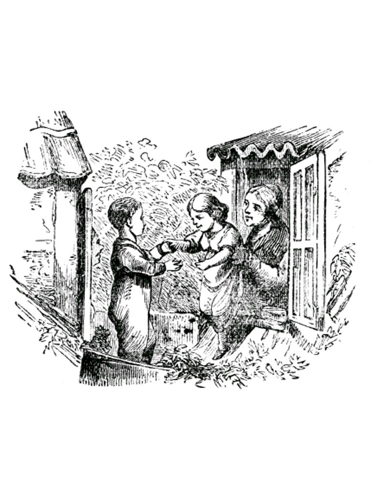
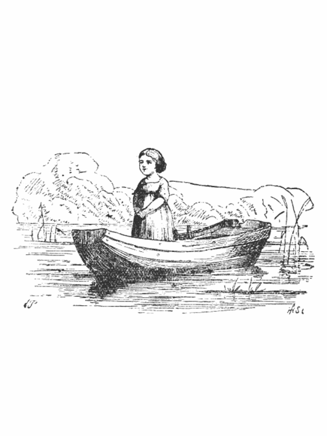
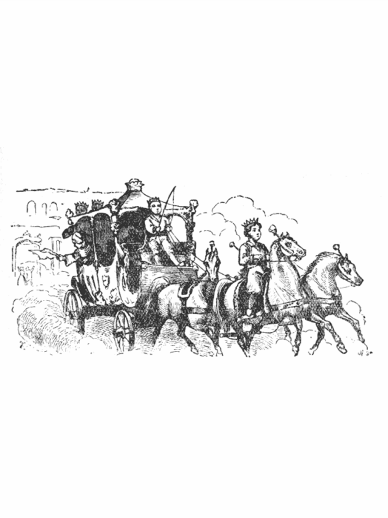
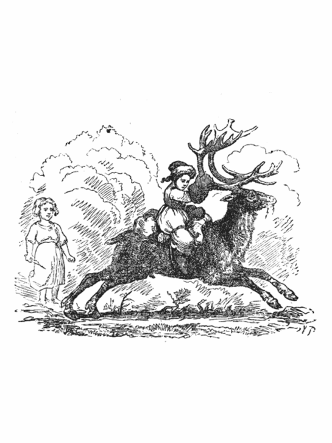
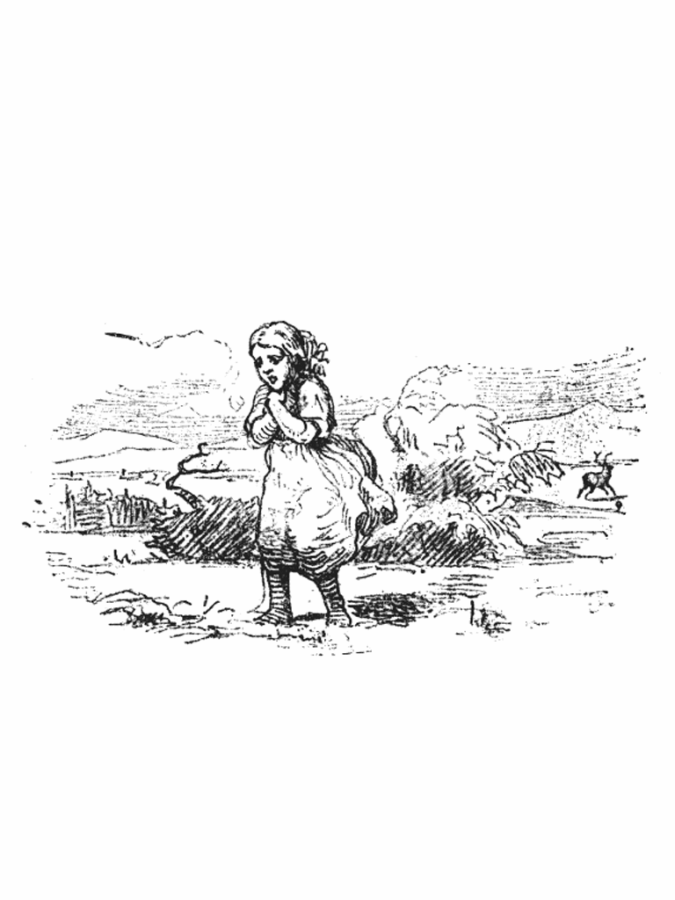
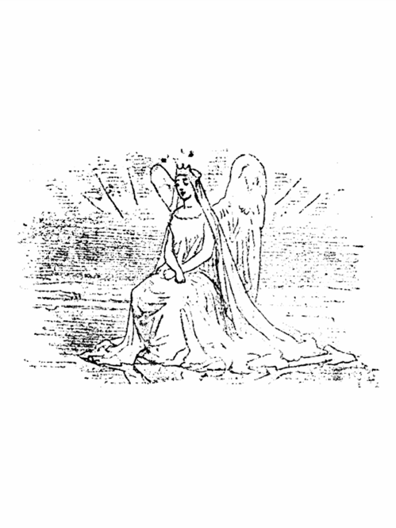
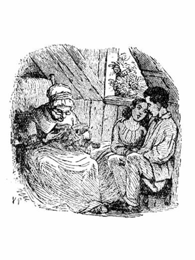

| 【日本語訳／英語原文 同時掲載】雪の女王／THE SNOW QUEEN ～七つのお話でできているおとぎ物語～ | |
| ハンス・クリスティアン・アンデルセン | |
目次
１ ．【日本語訳】第一のお話 鏡とそのかけらのこと
２ ．【英語原文】FIRST STORY. Which Treats of a Mirror and of the Splinters
３ ．【日本語訳】第二のお話 男の子と女の子
４ ．【英語原文】SECOND STORY. A Little Boy and a Little Girl
５ ．【日本語訳】第三のお話 魔法の使える女の花ぞの
６ ．【英語原文】THIRD STORY. Of the Flower-Garden At the Old Woman's Who Understood Witchcraft
７ ．【日本語訳】第四のお話 王子と王女
８ ．【英語原文】FOURTH STORY. The Prince and Princess
９ ．【日本語訳】第五のお話 おいはぎのこむすめ
10 ．【英語原文】FIFTH STORY. The Little Robber Maiden
11 ．【日本語訳】第六のお話 ラップランドの女とフィンランドの女
12 ．【英語原文】SIXTH STORY. The Lapland Woman and the Finland Woman
13 ．【日本語訳】第七のお話
14 ．【英語原文】SEVENTH STORY. What Took Place in the Palace of the Snow Queen, and what Happened Afterward.
１．【日本語訳】第一のお話 鏡とそのかけらのこと

さあ、きいていらっしゃい。はじめますよ。このお話をおしまいまできくと、だんだんなにかがはっきりしてきて、つまり、それがわるい魔法使 のお話であったことがわかるのです。この魔法使というのは、なかまでもいちばんいけないやつで、それこそまがいなしの「悪魔 」でした。
さて、ある日のこと、この悪魔は、たいそうなごきげんでした。というわけは、それは、鏡をいちめん作りあげたからでしたが、その鏡というのが、どんなけっこうなうつくしいものでも、それにうつると、ほとんどないもどうぜんに、ちぢこまってしまうかわり、くだらない、みっともないようすのものにかぎって、よけいはっきりと、いかにもにくにくしくうつるという、ふしぎなせいしつをもったものでした。どんなうつくしいけしきも、この鏡にうつすと、煮 くたらしたほうれんそうのように見え、どんなにりっぱなひとたちも、いやなかっこうになるか、どうたいのない、あたまだけで、さかだちするかしました。顔は見ちがえるほどゆがんでしまい、たった、ひとつぼっちのそばかすでも、鼻や口いっぱいに大きくひろがって、うつりました。
「こりゃおもしろいな。」と、その悪魔はいいました。ここに、たれかが、やさしい、つつましい心をおこしますと、それが鏡には、しかめっつらにうつるので、この魔法使の悪魔は、じぶんながら、こいつはうまい発明 だわいと、ついわらいださずには、いられませんでした。
この悪魔は、魔法学校をひらいていましたが、そこにかよっている魔生徒どもは、こんどふしぎなものがあらわれたと、ほうぼうふれまわりました。
さて、この鏡ができたので、はじめて世界や人間のほんとうのすがたがわかるのだと、このれんじゅうはふいちょうしてあるきました。で、ほうぼうへその鏡をもちまわったものですから、とうとうおしまいには、どこの国でも、どの人でも、その鏡にめいめいの、ゆがんだすがたをみないものは、なくなってしまいました。こうなると、図にのった悪魔のでしどもは、天までも昇 っていって、天使 たちや神さままで、わらいぐさにしようとおもいました。ところで、高く高くのぼって行けば、行くほど、その鏡はよけいひどく、しかめっつらをするので、さすがの悪魔も、おかしくて、もっていられなくなりました。でもかまわず、高く高くとのぼっていって、もう神さまや天使のお住居 に近くなりました。すると、鏡はあいかわらず、しかめっつらしながら、はげしくぶるぶるふるえだしたものですから、ついに悪魔どもの手から、地の上へおちて、何千万、何億万、というのではたりない、たいへんな数に、こまかくくだけて、とんでしまいました。ところが、これがため、よけい下界 のわざわいになったというわけは、鏡のかけらは、せいぜい砂つぶくらいの大きさしかないのが、世界じゅうにとびちってしまったからで、これが人の目にはいると、そのままそこにこびりついてしまいました。すると、その人たちは、なんでも物をまちがってみたり、ものごとのわるいほうだけをみるようになりました。それは、そのかけらが、どんなちいさなものでも、鏡がもっていたふしぎな力を、そのまま、まだのこしてもっていたからです。なかにはまた、人のしんぞうにはいったものがあって、そのしんぞうを、氷のかけらのように、つめたいものにしてしまいました。そのうちいくまいか大きなかけらもあって、窓ガラスに使われるほどでしたが、そんな窓ガラスのうちから、お友だちをのぞいてみようとしても、まるでだめでした。ほかのかけらで、めがねに用いられたものもありましたが、このめがねをかけて、物を正しく、まちがいのないように見ようとすると、とんださわぎがおこりました。悪魔はこんなことを、たいへんおもしろがって、おなかをゆすぶって、くすぐったがって、わらいました。ところで、ほかにもまだ、こまかいかけらは、空のなかにただよっていました。さあ、これからがお話なのですよ。
２．【英語原文】FIRST STORY. Which Treats of a Mirror and of the Splinters
Now then, let us begin. When we are at the end of the story, we shall know more than we know now: but to begin.
Once upon a time there was a wicked sprite, indeed he was the most mischievous of all sprites. One day he was in a very good humor, for he had made a mirror with the power of causing all that was good and beautiful when it was reflected therein, to look poor and mean; but that which was good-for-nothing and looked ugly was shown magnified and increased in ugliness. In this mirror the most beautiful landscapes looked like boiled spinach, and the best persons were turned into frights, or appeared to stand on their heads; their faces were so distorted that they were not to be recognised; and if anyone had a mole, you might be sure that it would be magnified and spread over both nose and mouth.
"That's glorious fun!" said the sprite. If a good thought passed through a man's mind, then a grin was seen in the mirror, and the sprite laughed heartily at his clever discovery. All the little sprites who went to his school---for he kept a sprite school---told each other that a miracle had happened; and that now only, as they thought, it would be possible to see how the world really looked. They ran about with the mirror; and at last there was not a land or a person who was not represented distorted in the mirror. So then they thought they would fly up to the sky, and have a joke there. The higher they flew with the mirror, the more terribly it grinned: they could hardly hold it fast. Higher and higher still they flew, nearer and nearer to the stars, when suddenly the mirror shook so terribly with grinning, that it flew out of their hands and fell to the earth, where it was dashed in a hundred million and more pieces. And now it worked much more evil than before; for some of these pieces were hardly so large as a grain of sand, and they flew about in the wide world, and when they got into people's eyes, there they stayed; and then people saw everything perverted, or only had an eye for that which was evil. This happened because the very smallest bit had the same power which the whole mirror had possessed. Some persons even got a splinter in their heart, and then it made one shudder, for their heart became like a lump of ice. Some of the broken pieces were so large that they were used for windowpanes, through which one could not see one's friends. Other pieces were put in spectacles; and that was a sad affair when people put on their glasses to see well and rightly. Then the wicked sprite laughed till he almost choked, for all this tickled his fancy. The fine splinters still flew about in the air: and now we shall hear what happened next.
３．【日本語訳】第二のお話 男の子と女の子

たくさんの家がたてこんで、おおぜい人がすんでいる大きな町では、たれでも、庭にするだけの、あき地をもつわけにはいきませんでした。ですから、たいてい、植木 ばちの花をみて、まんぞくしなければなりませんでした。
そういう町に、ふたりのまずしいこどもがすんでいて、植木ばちよりもいくらか大きな花ぞのをもっていました。そのふたりのこどもは、にいさんでも妹でもありませんでしたが、まるでほんとうのきょうだいのように、仲よくしていました。そのこどもたちの両親は、おむこうどうしで、その住んでいる屋根うらべやは、二軒の家の屋根と屋根とがくっついた所に、むかいあっていました。そのしきりの所には、一本の雨どい がとおっていて、両方から、ひとつずつ、ちいさな窓が、のぞいていました。で、といをひとまたぎしさえすれば、こちらの窓からむこうの窓へいけました。
こどもの親たちは、それぞれ木の箱を窓の外にだして、台所でつかうお野菜をうえておきました。そのほかにちょっとしたばら をひと株うえておいたのが、みごとにそだって、いきおいよくのびていました。ところで親たちのおもいつきで、その箱を、とい をまたいで、横にならべておいたので、箱は窓と窓とのあいだで、むこうからこちらへと、つづいて、そっくり、生きのいい花のかべを、ふたつならべたように見えました。えんどう豆のつるは、箱から下のほうにたれさがり、ばら の木は、いきおいよく長い枝をのばして、それがまた、両方の窓にからみついて、おたがいにおじぎをしあっていました。まあ花と青葉でこしらえた、アーチのようなものでした。その箱は、高い所にありましたし、こどもたちは、その上にはいあがってはいけないのをしっていました。そこで、窓から屋根へ出て、ばらの花の下にある、ちいさなこしかけに、こしをかけるおゆるしをいただいて、そこでおもしろそうに、あそびました。
冬になると、そういうあそびもだめになりました。窓はどうかすると、まるっきりこおりついてしまいました。そんなとき、こどもたちは、だんろの上で銅貨 をあたためて、こおった窓ガラスに、この銅貨をおしつけました。すると、そこにまるい、まんまるい、きれいなのぞきあなができあがって、このあなのむこうに、両方の窓からひとつずつ、それはそれはうれしそうな、やさしい目がぴかぴか光ります、それがあの男の子と、女の子でした。男の子はカイ、女の子はゲルダといいました。夏のあいだは、ただひとまたぎで、いったりきたりしたものが、冬になると、ふたりのこどもは、いくつも、いくつも、はしごだんを、おりたりあがったりしなければ、なりませんでした。外 には、雪がくるくる舞 っていました。
「あれはね、白いみつばちがあつまって、とんでいるのだよ。」と、おばあさんがいいました。
「あのなかにも、女王ばちがいるの。」と、男の子はたずねました。この子は、ほんとうのみつばちに、そういうもののいることを、しっていたのです。
「ああ、いるともさ。」と、おばあさんはいいました。「その女王ばちは、いつもたくさんなかまのあつまっているところに、とんでいるのだよ。なかまのなかでも、いちばんからだが大きくて、けっして下にじっとしてはいない。すぐと黒い雲のなかへとんではいってしまう。ま夜中に、いく晩も、いく晩も、女王は町の通から通へとびまわって、窓のところをのぞくのさ。するとふしぎとそこでこおってしまって、窓は花をふきつけたように、見えるのだよ。」
「ああ、それ、みたことがありますよ。」と、こどもたちは、口をそろえて叫 びました。そして、すると、これはほんとうの話なのだ、とおもいました。
「雪の女王さまは、うちのなかへもはいってこられるかしら。」と、女の子がたずねました。
「くるといいな。そうすれば、ぼく、それをあたたかいストーブの上にのせてやるよ。すると女王はとろけてしまうだろう。」と、男の子がいいました。
でも、おばあさんは、男の子のかみの毛をなでながら、ほかのお話をしてくれました。
その夕方、カイはうちにいて、着物 を半分 ぬぎかけながら、ふとおもいついて、窓のそばの、いすの上にあがって、れいのちいさなのぞきあなから、外をながめました。おもてには、ちらちら、こな雪が舞 っていましたが、そのなかで大きなかたまりがひとひら、植木箱のはしにおちました。するとみるみるそれは大きくなって、とうとうそれが、まがいのない、わかい、ひとりの女の人になりました。もう何百万という数の、星のように光るこな雪で織 った、うすい白い紗 の着物 を着ていました。やさしい女の姿はしていましたが、氷のからだをしていました。ぎらぎらひかる氷のからだをして、そのくせ生きているのです。その目は、あかるい星をふたつならべたようでしたが、おちつきも休みもない目でした。女は、カイのいる窓のほうに、うなずきながら、手まねぎしました。カイはびっくりして、いすからとびおりてしまいました。すぐそのあとで、大きな鳥が、窓の外をとんだような、けはいがしました。
そのあくる日は、からりとした、霜日 よりでした。――それからは、日にまし、雪どけのようきになって、とうとう春が、やってきました。お日さまはあたたかに、照 りかがやいて、緑 がもえだし、つばめは巣をつくりはじめました。あのむかいあわせの屋根うらべやの窓も、また、あけひろげられて、カイとゲルダとは、アパートのてっぺんの屋根上の雨 どいの、ちいさな花ぞので、ことしもあそびました。
この夏は、じつにみごとに、ばらの花がさきました。女の子のゲルダは、ばらのことのうたわれている、さんび歌をしっていました。そして、ばらの花というと、ゲルダはすぐ、じぶんの花ぞののばらのことをかんがえました。ゲルダは、そのさんび歌を、カイにうたってきかせますと、カイもいっしょにうたいました。
「ばらのはな さきてはちりぬ
おさなごエス やがてあおがん」
ふたりのこどもは、手をとりあって、ばらの花にほおずりして、神さまの、みひかりのかがやく、お日さまをながめて、おさなごエスが、そこに、おいでになるかのように、うたいかけました。なんという、楽しい夏の日だったでしょう。いきいきと、いつまでもさくことをやめないようにみえる、ばらの花のにおいと、葉のみどりにつつまれた、この屋根の上は、なんていいところでしたろう。
カイとゲルダは、ならんで掛けて、けものや鳥のかいてある、絵本をみていました。ちょうどそのとき――お寺の、大きな塔 の上で、とけいが、五つうちましたが――カイは、ふと、
「あッ、なにかちくりとむねにささったよ。それから、目にもなにかとびこんだようだ。」と、いいました。
あわてて、カイのくびを、ゲルダがかかえると、男の子は目をぱちぱちやりました。でも、目のなかにはなにもみえませんでした。
「じゃあ、とれてしまったのだろう。」と、カイはいいましたが、それは、とれたのではありませんでした。カイの目にはいったのは、れいの鏡から、とびちったかけらでした。そら、おぼえているでしょう。あのいやな、魔法 の鏡のかけらで、その鏡にうつすと、大きくていいものも、ちいさく、いやなものに、みえるかわり、いけないわるいものほど、いっそうきわだってわるく見え、なんによらず、物事 のあら が、すぐめだって見えるのです。かわいそうに、カイは、しんぞうに、かけらがひとつはいってしまいましたから、まもなく、それは氷のかたまりのように、なるでしょう。それなり、もういたみはしませんけれども、たしかに、しんぞうの中にのこりました。
「なんだってべそをかくんだ。」と、カイはいいました。「そんなみっともない顔をして、ぼくは、もうどうもなってやしないんだよ。」
「チェッ、なんだい。」こんなふうに、カイはふいに、いいだしました。「あのばらは虫がくっているよ。このばらも、ずいぶんへんてこなばらだ。みんなきたならしいばらだな。植わっている箱も箱なら、花も花だ。」
こういって、カイは、足で植木の箱をけとばして、ばらの花をひきちぎってしまいました。
「カイちゃん、あんた、なにをするの。」と、ゲルダはさけびました。
カイは、ゲルダのおどろいた顔をみると、またほかのばらの花を、もぎりだしました。それから、じぶんのうちの窓の中にとびこんで、やさしいゲルダとも、はなれてしまいました。
ゲルダがそのあとで、絵本 をもってあそびにきたとき、カイは、そんなもの、かあさんにだっこされている、あかんぼのみるものだ、といいました。また、おばあさまがお話をしても、カイはのべつに「だって、だって。」とばかりいっていました。それどころか、すきをみて、おばあさまのうしろにまわって、目がねをかけて、おばあさまの口まねまで、してみせました。しかも、なかなかじょうずにやったので、みんなはおかしがってわらいました。まもなくカイは、町じゅうの人たちの、身ぶりや口まねでも、できるようになりました。なんでも、ひとくせかわったことや、みっともないことなら、カイはまねすることをおぼえました。
「あの子はきっと、いいあたまなのにちがいない。」と、みんないいましたが、それは、カイの目のなかにはいった鏡のかけらや、しんぞうの奥ふかくささった、鏡のかけらのさせることでした。そんなわけで、カイはまごころをささげて、じぶんをしたってくれるゲルダまでも、いじめだしました。
カイのあそびも、すっかりかわって、ひどくこましゃくれたものになりました。――ある冬の日、こな雪がさかんに舞いくるっているなかで、カイは大きな虫目がねをもって、そとにでました。そして青いうわぎのすそをひろげて、そのうえにふってくる雪をうけました。
「さあ、この目がねのところからのぞいてごらん、ゲルダちゃん。」と、カイはいいました。なるほど、雪のひとひらが、ずっと大きく見えて、みごとにひらいた花か、六角の星のようで、それはまったくうつくしいものでありました。
「ほら、ずいぶんたくみにできているだろう。ほんとうの花なんか見るよりも、ずっとおもしろいよ。かけたところなんか、ひとつだってないものね。きちんと形をくずさずにいるのだよ。ただとけさえしなければね。」と、カイはいいました。
そののちまもなく、カイはあつい手ぶくろをはめて、そり をかついで、やってきました。そしてゲルダにむかって、
「ぼく、ほかのこどもたちのあそんでいる、ひろばのほうへいってもいいと、いわれたのだよ。」と、ささやくと、そのままいってしまいました。
その大きなひろばでは、こどもたちのなかでも、あつかましいのが、そりを、おひゃくしょうたちの馬車の、うしろにいわえつけて、じょうずに馬車といっしょにすべっていました。これは、なかなかおもしろいことでした。こんなことで、こどもたちたれも、むちゅうになってあそんでいると、そこへ、いちだい、大きなそりがやってきました。それは、まっ白にぬってあって、なかにたれだか、そまつな白い毛皮 にくるまって、白いそまつなぼうしをかぶった人がのっていました。そのそりは二回ばかり、ひろばをぐるぐるまわりました。そこでカイは、さっそくそれに、じぶんのちいさなそりを、しばりつけて、いっしょにすべっていきました。その大そりは、だんだんはやくすべって、やがて、つぎの大通を、まっすぐに、はしっていきました。そりをはしらせていた人は、くるりとふりかえって、まるでよくカイをしっているように、なれなれしいようすで、うなずきましたので、カイはついそりをとくのをやめてしまいました。こんなぐあいにして、とうとうそりは町の門のそとに、でてしまいました。そのとき、雪が、ひどくふってきたので、カイはじぶんの手のさきもみることができませんでした。それでもかまわず、そりははしっていきました。カイはあせって、しきりとつなをうごかして、その大そりからはなれようとしましたが、小そりはしっかりと大そりにしばりつけられていて、どうにもなりませんでした。ただもう、大そりにひっぱられて、風のようにとんでいきました。カイは大声をあげて、すくいをもとめましたが、たれの耳にも、きこえませんでした。雪はぶっつけるようにふりしきりました。そりは前へ前へと、とんでいきました。ときどき、そりがとびあがるのは、生 がきや、おほりの上を、とびこすのでしょうか、カイはまったくふるえあがってしまいました。主のおいのりをしようと思っても、あたまにうかんでくるのは、かけざんの九九ばかりでした。
こな雪のかたまりは、だんだん大きくなって、しまいには、大きな白いにわとりのようになりました。ふとその雪のにわとりが、両がわにとびたちました。とたんに、大そりはとまりました。そりをはしらせていた人が、たちあがったのを見ると、毛皮のがいとうもぼうしも、すっかり雪でできていました。それはすらりと、背の高い、目のくらむようにまっ白な女の人でした。それが雪の女王だったのです。
「ずいぶんよくはしったわね。」と、雪の女王はいいました。「あら、あんた、ふるえているのね。わたしのくまの毛皮におはいり。」
こういいながら女王は、カイをじぶんのそりにいれて、かたわらにすわらせ、カイのからだに、その毛皮をかけてやりました。するとカイは、まるで雪のふきつもったなかに、うずめられたように感じました。
「まださむいの。」と、女王はたずねました。それからカイのひたいに、ほおをつけました。まあ、それは、氷よりももっとつめたい感じでした。そして、もう半分氷のかたまりになりかけていた、カイのしんぞうに、じいんとしみわたりました。カイはこのまま死んでしまうのではないかと、おもいました。――けれど、それもほんのわずかのあいだで、やがてカイは、すっかり、きもちがよくなって、もう身のまわりのさむさなど、いっこう気にならなくなりました。
「ぼくのそりは――ぼくのそりを、わすれちゃいけない。」
カイがまず第一におもいだしたのは、じぶんのそりのことでありました。そのそりは、白いにわとりのうちの一わに、しっかりとむすびつけられました。このにわとりは、そりをせなかにのせて、カイのうしろでとんでいました。雪の女王は、またもういちど、カイにほおずりしました。それで、カイは、もう、かわいらしいゲルダのことも、おばあさまのことも、うちのことも、なにもかも、すっかりわすれてしまいました。
「さあ、もうほおずりはやめましょうね。」と、雪の女王はいいました。「このうえすると、お前を死なせてしまうかもしれないからね。」
カイは女王をみあげました。まあそのうつくしいことといったら。カイは、これだけかしこそうなりっぱな顔がほかにあろうとは、どうしたっておもえませんでした。いつか窓のところにきて、手まねきしてみせたときとちがって、もうこの女王が、氷でできているとは、おもえなくなりました。カイの目には、女王は、申しぶんなくかんぜんで、おそろしいなどとは、感じなくなりました。それでうちとけて、じぶんは分数 までも、あんざんで、できることや、じぶんの国が、いく平方マイルあって、どのくらいの人口があるか、しっていることまで、話しました。女王は、しじゅう、にこにこして、それをきいていました。それが、なんだ、しっていることは、それっぱかしかと、いわれたようにおもって、あらためて、ひろいひろい大空をあおぎました。すると、女王はカイをつれて、たかくとびました。高い黒雲の上までも、とんで行きました。あらしはざあざあ、ひゅうひゅう、ふきすさんで、昔の歌でもうたっているようでした。女王とカイは、森や、湖や、海や、陸の上を、とんで行きました。下のほうでは、つめたい風がごうごううなって、おおかみのむれがほえたり、雪がしゃっしゃっときしったりして、その上に、まっくろなからすがカアカアないてとんでいました。しかし、はるか上のほうには、お月さまが、大きくこうこうと、照っていました。このお月さまを、ながいながい冬の夜じゅう、カイはながめてあかしました。ひるになると、カイは女王の足もとでねむりました。
４．【英語原文】SECOND STORY. A Little Boy and a Little Girl
In a large town, where there are so many houses, and so many people, that there is no roof left for everybody to have a little garden; and where, on this account, most persons are obliged to content themselves with flowers in pots; there lived two little children, who had a garden somewhat larger than a flower-pot. They were not brother and sister; but they cared for each other as much as if they were. Their parents lived exactly opposite. They inhabited two garrets; and where the roof of the one house joined that of the other, and the gutter ran along the extreme end of it, there was to each house a small window: one needed only to step over the gutter to get from one window to the other.
The children's parents had large wooden boxes there, in which vegetables for the kitchen were planted, and little rosetrees besides: there was a rose in each box, and they grew splendidly. They now thought of placing the boxes across the gutter, so that they nearly reached from one window to the other, and looked just like two walls of flowers. The tendrils of the peas hung down over the boxes; and the rose-trees shot up long branches, twined round the windows, and then bent towards each other: it was almost like a triumphant arch of foliage and flowers. The boxes were very high, and the children knew that they must not creep over them; so they often obtained permission to get out of the windows to each other, and to sit on their little stools among the roses, where they could play delightfully. In winter there was an end of this pleasure. The windows were often frozen over; but then they heated copper farthings on the stove, and laid the hot farthing on the windowpane, and then they had a capital peep-hole, quite nicely rounded; and out of each peeped a gentle friendly eye---it was the little boy and the little girl who were looking out. His name was Kay, hers was Gerda. In summer, with one jump, they could get to each other; but in winter they were obliged first to go down the long stairs, and then up the long stairs again: and out-of-doors there was quite a snow-storm.
"It is the white bees that are swarming," said Kay's old grandmother.
"Do the white bees choose a queen?" asked the little boy; for he knew that the honey-bees always have one.
"Yes," said the grandmother, "she flies where the swarm hangs in the thickest clusters. She is the largest of all; and she can never remain quietly on the earth, but goes up again into the black clouds. Many a winter's night she flies through the streets of the town, and peeps in at the windows; and they then freeze in so wondrous a manner that they look like flowers."
"Yes, I have seen it," said both the children; and so they knew that it was true.
"Can the Snow Queen come in?" said the little girl.
"Only let her come in!" said the little boy. "Then I'd put her on the stove, and she'd melt."
And then his grandmother patted his head and told him other stories.
In the evening, when little Kay was at home, and half undressed, he climbed up on the chair by the window, and peeped out of the little hole. A few snow-flakes were falling, and one, the largest of all, remained lying on the edge of a flower-pot.
The flake of snow grew larger and larger; and at last it was like a young lady, dressed in the finest white gauze, made of a million little flakes like stars. She was so beautiful and delicate, but she was of ice, of dazzling, sparkling ice; yet she lived; her eyes gazed fixedly, like two stars; but there was neither quiet nor repose in them. She nodded towards the window, and beckoned with her hand. The little boy was frightened, and jumped down from the chair; it seemed to him as if, at the same moment, a large bird flew past the window.
The next day it was a sharp frost---and then the spring came; the sun shone, the green leaves appeared, the swallows built their nests, the windows were opened, and the little children again sat in their pretty garden, high up on the leads at the top of the house.
That summer the roses flowered in unwonted beauty. The little girl had learned a hymn, in which there was something about roses; and then she thought of her own flowers; and she sang the verse to the little boy, who then sang it with her:
"The rose in the valley is blooming so sweet,
And angels descend there the children to greet."
And the children held each other by the hand, kissed the roses, looked up at the clear sunshine, and spoke as though they really saw angels there. What lovely summer-days those were! How delightful to be out in the air, near the fresh rose-bushes, that seem as if they would never finish blossoming!
Kay and Gerda looked at the picture-book full of beasts and of birds; and it was then---the clock in the church-tower was just striking five---that Kay said, "Oh! I feel such a sharp pain in my heart; and now something has got into my eye!"
The little girl put her arms around his neck. He winked his eyes; now there was nothing to be seen.
"I think it is out now," said he; but it was not. It was just one of those pieces of glass from the magic mirror that had got into his eye; and poor Kay had got another piece right in his heart. It will soon become like ice. It did not hurt any longer, but there it was.
"What are you crying for?" asked he. "You look so ugly! There's nothing the matter with me. Ah," said he at once, "that rose is cankered! And look, this one is quite crooked! After all, these roses are very ugly! They are just like the box they are planted in!" And then he gave the box a good kick with his foot, and pulled both the roses up.
"What are you doing?" cried the little girl; and as he perceived her fright, he pulled up another rose, got in at the window, and hastened off from dear little Gerda.
Afterwards, when she brought her picture-book, he asked, "What horrid beasts have you there?" And if his grandmother told them stories, he always interrupted her; besides, if he could manage it, he would get behind her, put on her spectacles, and imitate her way of speaking; he copied all her ways, and then everybody laughed at him. He was soon able to imitate the gait and manner of everyone in the street. Everything that was peculiar and displeasing in them---that Kay knew how to imitate: and at such times all the people said, "The boy is certainly very clever!" But it was the glass he had got in his eye; the glass that was sticking in his heart, which made him tease even little Gerda, whose whole soul was devoted to him.
His games now were quite different to what they had formerly been, they were so very knowing. One winter's day, when the flakes of snow were flying about, he spread the skirts of his blue coat, and caught the snow as it fell.
"Look through this glass, Gerda," said he. And every flake seemed larger, and appeared like a magnificent flower, or beautiful star; it was splendid to look at!
"Look, how clever!" said Kay. "That's much more interesting than real flowers! They are as exact as possible; there is not a fault in them, if they did not melt!"
It was not long after this, that Kay came one day with large gloves on, and his little sledge at his back, and bawled right into Gerda's ears, "I have permission to go out into the square where the others are playing"; and off he was in a moment.
There, in the market-place, some of the boldest of the boys used to tie their sledges to the carts as they passed by, and so they were pulled along, and got a good ride. It was so capital! Just as they were in the very height of their amusement, a large sledge passed by: it was painted quite white, and there was someone in it wrapped up in a rough white mantle of fur, with a rough white fur cap on his head. The sledge drove round the square twice, and Kay tied on his sledge as quickly as he could, and off he drove with it. On they went quicker and quicker into the next street; and the person who drove turned round to Kay, and nodded to him in a friendly manner, just as if they knew each other. Every time he was going to untie his sledge, the person nodded to him, and then Kay sat quiet; and so on they went till they came outside the gates of the town. Then the snow began to fall so thickly that the little boy could not see an arm's length before him, but still on he went: when suddenly he let go the string he held in his hand in order to get loose from the sledge, but it was of no use; still the little vehicle rushed on with the quickness of the wind. He then cried as loud as he could, but no one heard him; the snow drifted and the sledge flew on, and sometimes it gave a jerk as though they were driving over hedges and ditches. He was quite frightened, and he tried to repeat the Lord's Prayer; but all he could do, he was only able to remember the multiplication table.
The snow-flakes grew larger and larger, till at last they looked just like great white fowls. Suddenly they flew on one side; the large sledge stopped, and the person who drove rose up. It was a lady; her cloak and cap were of snow. She was tall and of slender figure, and of a dazzling whiteness. It was the Snow Queen.
"We have travelled fast," said she; "but it is freezingly cold. Come under my bearskin." And she put him in the sledge beside her, wrapped the fur round him, and he felt as though he were sinking in a snow-wreath.
"Are you still cold?" asked she; and then she kissed his forehead. Ah! it was colder than ice; it penetrated to his very heart, which was already almost a frozen lump; it seemed to him as if he were about to die---but a moment more and it was quite congenial to him, and he did not remark the cold that was around him.
"My sledge! Do not forget my sledge!" It was the first thing he thought of. It was there tied to one of the white chickens, who flew along with it on his back behind the large sledge. The Snow Queen kissed Kay once more, and then he forgot little Gerda, grandmother, and all whom he had left at his home.
"Now you will have no more kisses," said she, "or else I should kiss you to death!"
Kay looked at her. She was very beautiful; a more clever, or a more lovely countenance he could not fancy to himself; and she no longer appeared of ice as before, when she sat outside the window, and beckoned to him; in his eyes she was perfect, he did not fear her at all, and told her that he could calculate in his head and with fractions, even; that he knew the number of square miles there were in the different countries, and how many inhabitants they contained; and she smiled while he spoke. It then seemed to him as if what he knew was not enough, and he looked upwards in the large huge empty space above him, and on she flew with him; flew high over the black clouds, while the storm moaned and whistled as though it were singing some old tune. On they flew over woods and lakes, over seas, and many lands; and beneath them the chilling storm rushed fast, the wolves howled, the snow crackled; above them flew large screaming crows, but higher up appeared the moon, quite large and bright; and it was on it that Kay gazed during the long long winter's night; while by day he slept at the feet of the Snow Queen.
５．【日本語訳】第三のお話 魔法の使える女の花ぞの

ところで、カイが、あれなりかえってこなかったとき、あの女の子のゲルダは、どうしたでしょう。カイはまあどうしたのか、たれもしりませんでした。なんの手がかりもえられませんでした。こどもたちの話でわかったのは、カイがよその大きなそりに、じぶんのそりをむすびつけて、町をはしりまわって、町の門からそとへでていったということだけでした。さて、それからカイがどんなことになってしまったか、たれもしっているものはありませんでした。いくにんもの人のなみだが、この子のために、そそがれました。そして、あのゲルダは、そのうちでも、ひとり、もうながいあいだ、むねのやぶれるほどになきました。――みんなのうわさでは、カイは町のすぐそばを流れている川におちて、おぼれてしまったのだろうということでした。ああ、まったくながいながい、いんきな冬でした。
いま、春はまた、あたたかいお日さまの光とつれだってやってきました。
「カイちゃんは死んでしまったのよ。」と、ゲルダはいいました。
「わたしはそうおもわないね。」と、お日さまがいいました。
「カイちゃんは死んでしまったのよ。」と、ゲルダはつばめにいいました。
「わたしはそうおもいません。」と、つばめたちはこたえました。そこで、おしまいに、ゲルダは、じぶんでも、カイは死んだのではないと、おもうようになりました。
「あたし、あたらしい赤いくつをおろすわ。あれはカイちゃんのまだみなかったくつよ。あれをはいて川へおりていって、カイちゃんのことをきいてみましょう。」と、ゲルダは、ある朝いいました。で、朝はやかったので、ゲルダはまだねむっていたおばあさまに、せっぷんして、赤いくつをはき、たったひとりぼっちで、町の門を出て、川のほうへあるいていきました。
「川さん、あなたが、わたしのすきなおともだちを、とっていってしまったというのは、ほんとうなの。この赤いくつをあげるわ。そのかわり、カイちゃんをかえしてね。」
すると川の水が、よしよしというように、みょうに波だってみえたので、ゲルダはじぶんのもっているもののなかでいちばんすきだった、赤いくつをぬいで、ふたつとも、川のなかになげこみました。ところが、くつは岸の近くにおちたので、さざ波がすぐ、ゲルダの立っているところへ、くつをはこんできてしまいました。まるで川は、ゲルダから、いちばんだいじなものをもらうことをのぞんでいないように見えました。なぜなら、川はカイをかくしてはいなかったからです。けれど、ゲルダは、くつをもっととおくのほうへなげないからいけなかったのだとおもいました。そこで、あしのしげみにうかんでいた小舟にのりました。そして舟のいちばんはしへいって、そこからくつをなげこみました。でも、小舟はしっかりと岸にもやってなかったので、くつをなげるので動かしたひょうしに、岸からすべり出してしまいました。それに気がついて、ゲルダは、いそいでひっかえそうとしましたが、小舟のこちらのはしまでこないうちに、舟は二三尺 も岸からはなれて、そのままで、どんどんはやく流れていきました。
そこで、ゲルダは、たいそうびっくりして、なきだしましたが、すずめのほかは、たれもその声をきくものはありませんでした。すずめには、ゲルダをつれかえる力はありませんでした。でも、すずめたちは、岸にそってとびながら、ゲルダをなぐさめるように、
「だいじょうぶ、ぼくたちがいます。」と、なきました。
小舟は、ずんずん流れにはこばれていきました。ゲルダは、足にくつしたをはいただけで、じっと舟のなかにすわったままでいました。ちいさな赤いくつは、うしろのほうで、ふわふわういていましたが、小舟においつくことはできませんでした。小舟のほうが、くつよりも、もっとはやくながれていったからです。
岸は、うつくしいけしきでした。きれいな花がさいていたり、古い木が立っていたり、ところどころ、なだらかな土手 には、ひつじやめうしが、あそんでいました。でも、にんげんの姿は見えませんでした。
「ことによると、この川は、わたしを、カイちゃんのところへ、つれていってくれるのかもしれないわ。」と、ゲルダはかんがえました。
それで、だんだんげんきがでてきたので、立ちあがって、ながいあいだ、両方の青あおとうつくしい岸をながめていました。それからゲルダは、大きなさくらんぼばたけのところにきました。そのはたけの中には、ふうがわりな、青や赤の窓のついた、一けんのちいさな家がたっていました。その家はかやぶきで、おもてには、舟で通りすぎる人たちのほうにむいて、木製 のふたりのへいたいが、銃剣 肩に立っていました。
ゲルダは、それをほんとうのへいたいかとおもって、こえをかけました。しかし、いうまでもなくそのへいたいは、なんのこたえもしませんでした。ゲルダはすぐそのそばまできました。波が小舟を岸のほうにはこんだからです。
ゲルダはもっと大きなこえで、よびかけてみました。すると、その家のなかから、撞木杖 にすがった、たいそう年とったおばあさんが出てきました。おばあさんは、目のさめるようにきれいな花をかいた、大きな夏ぼうし をかぶっていました。
「やれやれ、かわいそうに。どうしておまえさんは、そんなに大きな波のたつ上を、こんなとおいところまで流れてきたのだね。」と、おばあさんはいいました。
それからおばあさんは、ざぶりざぶり水の中にはいって、撞木杖で小舟をおさえて、それを陸 のほうへひっぱってきて、ゲルダをだきおろしました。ゲルダはまた陸にあがることのできたのをうれしいとおもいました。でも、このみなれないおばあさんは、すこし、こわいようでした。
「さあ、おまえさん、名まえをなんというのだか、またどうして、ここへやってきたのだか、話してごらん。」と、おばあさんはいいました。そこでゲルダは、なにもかも、おばあさんに話しました。おばあさんはうなずきながら、「ふん、ふん。」と、いいました。ゲルダは、すっかり話してしまってから、おばあさんがカイをみかけなかったかどうか、たずねますと、おばあさんは、カイはまだここを通らないが、いずれそのうち、ここを通るかもしれない。まあ、そう、くよくよおもわないで、花をながめたり、さくらんぼをたべたりしておいで。花はどんな絵本のよりも、ずっときれいだし、その花びらの一まい、一まいが、ながいお話をしてくれるだろうからといいました。それからおばあさんは、ゲルダの手をとって、じぶんのちいさな家へつれていって、中から戸にかぎをかけました。
その家の窓は、たいそう高くて、赤いのや、青いのや、黄いろの窓ガラスだったので、お日さまの光はおもしろい色にかわって、きれいに、へやのなかにさしこみました。つくえの上には、とてもおいしいさくらんぼがおいてありました。そしてゲルダは、いくらたべてもいいという、おゆるしがでたものですから、おもうぞんぶんそれをたべました。ゲルダがさくらんぼをたべているあいだに、おばあさんが、金のくし で、ゲルダのかみの毛をすきました。そこで、ゲルダのかみの毛は、ばらの花のような、まるっこくて、かわいらしい顔のまわりで、金色にちりちりまいて、光っていました。
「わたしは長いあいだ、おまえのような、かわいらしい女の子がほしいとおもっていたのだよ。さあこれから、わたしたちといっしょに、なかよくくらそうね。」と、おばあさんはいいました。そしておばあさんが、ゲルダのかみの毛にくしをいれてやっているうちに、ゲルダはだんだん、なかよしのカイのことなどはわすれてしまいました。というのは、このおばあさんは魔法 が使えるからでした。けれども、おばあさんは、わるい魔女 ではありませんでした。おばあさんはじぶんのたのしみに、ほんのすこし魔法を使うだけで、こんども、それをつかったのは、ゲルダをじぶんの手もとにおきたいためでした。そこで、おばあさんは、庭へ出て、そこのばらの木にむかって、かたっぱしから撞木杖をあてました。すると、いままでうつくしく、さきほこっていたばらの木も、みんな、黒い土の中にしずんでしまったので、もうたれの目にも、どこにいままでばらの木があったか、わからなくなりました。おばあさんは、ゲルダがばらを見て、自分の家のばらのことをかんがえ、カイのことをおもいだして、ここからにげていってしまうといけないとおもったのです。
さて、ゲルダは花ぞのにあんないされました。――そこは、まあなんという、いい香りがあふれていて、目のさめるように、きれいなところでしたろう。花という花は、こぼれるようにさいていました。そこでは、一ねんじゅう花がさいていました。どんな絵本の花だって、これよりうつくしく、これよりにぎやかな色にさいてはいませんでした。ゲルダはおどりあがってよろこびました。そして夕日が、高いさくらの木のむこうにはいってしまうまで、あそびました。それからゲルダは、青いすみれの花がいっぱいつまった、赤い絹のクションのある、きれいなベッドの上で、結婚式の日の女王さまのような、すばらしい夢をむすびました。
そのあくる日、ゲルダは、また、あたたかいお日さまのひかりをあびて、花たちとあそびました。こんなふうにして、いく日もいく日もたちました。ゲルダは花ぞのの花をのこらずしりました。そのくせ、花ぞのの花は、かずこそずいぶんたくさんありましたけれど、ゲルダにとっては、どうもまだなにか、ひといろたりないようにおもわれました。でも、それがなんの花であるか、わかりませんでした。するうちある日、ゲルダはなにげなくすわって、花をかいたおばあさんの夏ぼうしを、ながめていましたが、その花のうちで、いちばんうつくしいのは、ばらの花でした。おばあさんは、ほかのばらの花をみんな見えないように、かくしたくせに、じぶんのぼうしにかいたばらの花を、けすことを、ついわすれていたのでした。まあ手ぬかりということは、たれにでもあるものです。
「あら、ここのお庭には、ばらがないわ。」と、ゲルダはさけびました。
それから、ゲルダは、花ぞのを、いくどもいくども、さがしまわりましたけれども、ばらの花は、ひとつもみつかりませんでした。そこで、ゲルダは、花ぞのにすわってなきました。ところが、なみだが、ちょうどばらがうずめられた場所の上におちました。あたたかいなみだが、しっとりと土をしめらすと、ばらの木は、みるみるしずまない前とおなじように、花をいっぱいつけて、地の上にあらわれてきました。ゲルダはそれをだいて、せっぷんしました。そして、じぶんのうちのばらをおもいだし、それといっしょに、カイのこともおもいだしました。
「まあ、あたし、どうして、こんなところにひきとめられていたのかしら。」と、ゲルダはいいました。「あたし、カイちゃんをさがさなくてはならなかったのだわ――カイちゃん、どこにいるか、しらなくって。あなたは、カイちゃんが死んだとおもって。」と、ゲルダは、ばらにききました。
「カイちゃんは死にはしませんよ。わたしどもは、いままで地のなかにいました。そこには死んだ人はみないましたが、でも、カイちゃんはみえませんでしたよ。」と、ばらの花がこたえました。
「ありがとう。」と、ゲルダはいって、ほかの花のところへいって、ひとつひとつ、うてなのなかをのぞきながらたずねました。「カイちゃんはどこにいるか、しらなくって。」
でも、どの花も、日なたぼっこしながら、じぶんたちのつくったお話や、おとぎばなしのことばかりかんがえていました。ゲルダはいろいろと花にきいてみましたが、どの花もカイのことについては、いっこうにしりませんでした。
ところで、おにゆりは、なんといったでしょう。
「あなたには、たいこの音が、ドンドンというのがきこえますか。あれには、ふたつの音しかないのです。だからドンドンといつでもやっているのです。女たちがうたう、とむらいのうたをおききなさい。また、坊 さんのあげる、おいのりをおききなさい。――インド人 のやもめ は、火葬 のたきぎのつまれた上に、ながい赤いマントをまとって立っています。焔 がその女と、死んだ夫 のしかばねのまわりにたちのぼります。でもインドの女は、ぐるりにあつまった人たちのなかの、生きているひとりの男のことをかんがえているのです。その男の目は焔よりもあつくもえ、その男のやくような目つきは、やがて、女のからだをやきつくして灰にする焔などよりも、もっとはげしく、女の心の中で、もえていたのです。心の焔は、火あぶりのたきぎのなかで、もえつきるものでしょうか。」
「なんのことだか、まるでわからないわ。」と、ゲルダがこたえました。
「わたしの話はそれだけさ。」と、おにゆりはいいました。
ひるがおは、どんなお話をしたでしょう。
「せまい山道のむこうに、昔のさむらいのお城がぼんやりみえます。くずれかかった、赤い石がきのうえには、つたがふかくおいしげって、ろだいのほうへ、ひと葉ひと葉、はいあがっています。ろだいの上には、うつくしいおとめが、らんかんによりかかって、おうらいをみおろしています。どんなばらの花でも、そのおとめほど、みずみずとは枝にさきだしません。どんなりんごの花でも、こんなにかるがるとしたふうに、木から風がはこんでくることはありません。まあ、おとめのうつくしい絹の着物のさらさらなること。
あの人はまだこないのかしら。」
「あの人というのは、カイちゃんのことなの。」と、ゲルダがたずねました。
「わたしは、ただ、わたしのお話をしただけ。わたしの夢をね。」と、ひるがおはこたえました。
かわいい、まつゆきそうは、どんなお話をしたでしょう。
「木と木のあいだに、つなでつるした長い板がさがっています。ぶらんこなの。雪のように白い着物を着て、ぼうしには、ながい、緑色の絹のリボンをまいた、ふたりのかわいらしい女の子が、それにのってゆられています。この女の子たちよりも、大きい男きょうだいが、そのぶらんこに立ってのっています。男の子は、かた手にちいさなお皿をもってるし、かた手には土製のパイプをにぎっているので、からだをささえるために、つなにうでをまきつけています。男の子はシャボンだまをふいているのです。ぶらんこがゆれて、シャボンだまは、いろんなうつくしい色にかわりながらとんで行きます。いちばんおしまいのシャボンだまは、風にゆられながら、まだパイプのところについています。ぶらんこはとぶようにゆれています。あら、シャボンだまのように身のかるい黒犬があと足で立って、のせてもらおうとしています。ぶらんこはゆれる、黒犬はひっくりかえって、ほえているわ。からかわれて、おこっているのね。シャボンだまははじけます。――ゆれるぶらんこ。われてこわれるシャボンだま。――これがわたしの歌なんです。」
「あなたのお話は、とてもおもしろそうね。けれどあなたは、かなしそうに話しているのね。それからあなたは、カイちゃんのことは、なんにも話してくれないのね。」
ヒヤシンスの花は、どんなお話をしたでしょう。
「あるところに、三人の、すきとおるようにうつくしい、きれいな姉いもうと がおりました。なかでいちばん上のむすめの着物は赤く、二ばん目のは水色で、三ばん目のはまっ白でした。きょうだいたちは、手をとりあって、さえた月の光の中で、静かな湖 のふちにでて、おどりをおどります。三人とも妖女 ではなくて、にんげんでした。そのあたりには、なんとなくあまい、いいにおいがしていました。むすめたちは森のなかにきえました。あまい、いいにおいが、いっそうつよくなりました。すると、その三人のうつくしいむすめをいれた三つのひつぎが、森のしげみから、すうっとあらわれてきて、湖のむこうへわたっていきました。つちぼたるが、そのぐるりを、空に舞 っているちいさなともしびのように、ぴかりぴかりしていました。おどりくるっていた三人のむすめたちは、ねむったのでしょうか。死んだのでしょうか。――花のにおいはいいました。あれはなきがらです。ゆうべの鐘 がなくなったひとたちをとむらいます。」
「ずいぶんかなしいお話ね。あなたの、そのつよいにおいをかぐと、あたし死んだそのむすめさんたちのことを、おもいださずにはいられませんわ。ああ、カイちゃんは、ほんとうに死んでしまったのかしら。地のなかにはいっていたばらの花は、カイちゃんは死んではいないといってるけれど。」
「チリン、カラン。」と、ヒヤシンスのすずがなりました。「わたしはカイちゃんのために、なっているのではありません。カイちゃんなんて人は、わたしたち、すこしもしりませんもの。わたしたちは、ただ自分のしっているたったひとつの歌を、うたっているだけです。」
それから、ゲルダは、緑の葉のあいだから、あかるくさいている、たんぽぽのところへいきました。
「あなたはまるで、ちいさな、あかるいお日さまね。どこにわたしのおともだちがいるか、しっていたらおしえてくださいな。」と、ゲルダはいいました。
そこで、たんぽぽは、よけいあかるくひかりながら、ゲルダのほうへむきました。どんな歌を、その花がうたったでしょう。その歌も、カイのことではありませんでした。
「ちいさな、なか庭には、春のいちばんはじめの日、うららかなお日さまが、あたたかに照っていました。お日さまの光は、おとなりの家の、まっ白なかべの上から下へ、すべりおちていました。そのそばに、春いちばんはじめにさく、黄色い花が、かがやく光の中に、金のようにさいていました。おばあさんは、いすをそとにだして、こしをかけていました。おばあさんの孫の、かわいそうな女中ぼうこうをしているうつくしい女の子が、おばあさんにあうために、わずかなおひまをもらって、うちへかえってきました。女の子はおばあさんにせっぷんしました。このめぐみおおいせっぷんには金 が、こころの金 がありました。その口にも金、そのふむ土にも金、そのあさのひとときにも金がありました。これがわたしのつまらないお話です。」と、たんぽぽがいいました。
「まあ、わたしのおばあさまは、どうしていらっしゃるかしら。」と、ゲルダはためいきをつきました。「そうよ。きっとおばあさまは、わたしにあいたがって、かなしがっていらっしゃるわ。カイちゃんのいなくなったとおなじように、しんぱいしていらっしゃるわ。けれど、わたし、じきにカイちゃんをつれて、うちにかえれるでしょう。――もう花たちにいくらたずねてみたってしかたがない。花たち、ただ、自分の歌をうたうだけで、なんにもこたえてくれないのだもの。」
そこでゲルダは、はやくかけられるように、着物をきりりとたくしあげました。けれど、黄 ずいせんを、ゲルダがとびこえようとしたとき、それに足がひっかかりました。そこでゲルダはたちどまって、その黄色い、背の高い花にむかってたずねました。
「あんた、カイちゃんのこと、なんかしっているの。」
そしてゲルダは、こごんで、その花の話すことをききました。その花はなんといったでしょう。
「わたし、じぶんがみられるのよ。じぶんがわかるのよ。」と、黄ずいせんはいいました。「ああ、ああ、なんてわたしはいいにおいがするんだろう。屋根うらのちいさなへやに、半はだかの、ちいさなおどりこが立っています。おどりこはかた足で立ったり、両足で立ったりして、まるで世界中をふみつけるように見えます。でも、これはほんの目のまよいです。おどりこは、ちいさな布 に、湯わかしから湯をそそぎます。これはコルセットです。――そうです。そうです、せいけつがなによりです。白い上着 も、くぎにかけてあります。それもまた、湯わかしの湯であらって、屋根でかわかしたものなのです。おどりこは、その上着をつけて、サフラン色のハンケチをくびにまきました。ですから、上着はよけい白くみえました。ほら、足をあげた。どう、まるでじくの上に立って、うんとふんばった姿は。わたし、じぶんが見えるの。じぶんがわかるの。」
「なにもそんな話、わたしにしなくてもいいじゃないの。そんなこと、どうだって、かまわないわ。」と、ゲルダはいいました。
それでゲルダは、庭のむこうのはしまでかけて行きました。その戸はしまっていましたが、ゲルダがそのさびついたとってを、どんとおしたので、はずれて戸はぱんとひらきました。ゲルダはひろい世界に、はだしのままでとびだしました。ゲルダは、三度 もあとをふりかえってみましたが、たれもおっかけてくるものはありませんでした。とうとうゲルダは、もうとてもはしることができなくなったので、大きな石の上にこしをおろしました。そこらをみまわしますと、夏はすぎて、秋がふかくなっていました。お日さまが年中かがやいて、四季 の花がたえずさいていた、あのうつくしい花ぞのでは、そんなことはわかりませんでした。
「ああ、どうしましょう。あたし、こんなにおくれてしまって。」と、ゲルダはいいました。「もうとうに秋になっているのね。さあ、ゆっくりしてはいられないわ。」
そしてゲルダは立ちあがって、ずんずんあるきだしました。まあ、ゲルダのかよわい足は、どんなにいたむし、そして、つかれていたことでしょう。どこも冬がれて、わびしいけしきでした。ながいやなぎの葉は、すっかり黄ばんで、きりが雨しずくのように枝からたれていました。ただ、とげのある、こけもも だけは、まだ実 をむすんでいましたが、こけももはすっぱくて、くちがまがるようでした。ああ、なんてこのひろびろした世界は灰色で、うすぐらくみえたことでしょう。
６．【英語原文】THIRD STORY. Of the Flower-Garden At the Old Woman's Who Understood Witchcraft
But what became of little Gerda when Kay did not return? Where could he be? Nobody knew; nobody could give any intelligence. All the boys knew was, that they had seen him tie his sledge to another large and splendid one, which drove down the street and out of the town. Nobody knew where he was; many sad tears were shed, and little Gerda wept long and bitterly; at last she said he must be dead; that he had been drowned in the river which flowed close to the town. Oh! those were very long and dismal winter evenings!
At last spring came, with its warm sunshine.
"Kay is dead and gone!" said little Gerda.
"That I don't believe," said the Sunshine.
"Kay is dead and gone!" said she to the Swallows.
"That I don't believe," said they: and at last little Gerda did not think so any longer either.
"I'll put on my red shoes," said she, one morning; "Kay has never seen them, and then I'll go down to the river and ask there."
It was quite early; she kissed her old grandmother, who was still asleep, put on her red shoes, and went alone to the river.
"Is it true that you have taken my little playfellow? I will make you a present of my red shoes, if you will give him back to me."
And, as it seemed to her, the blue waves nodded in a strange manner; then she took off her red shoes, the most precious things she possessed, and threw them both into the river. But they fell close to the bank, and the little waves bore them immediately to land; it was as if the stream would not take what was dearest to her; for in reality it had not got little Kay; but Gerda thought that she had not thrown the shoes out far enough, so she clambered into a boat which lay among the rushes, went to the farthest end, and threw out the shoes. But the boat was not fastened, and the motion which she occasioned, made it drift from the shore. She observed this, and hastened to get back; but before she could do so, the boat was more than a yard from the land, and was gliding quickly onward.
Little Gerda was very frightened, and began to cry; but no one heard her except the sparrows, and they could not carry her to land; but they flew along the bank, and sang as if to comfort her, "Here we are! Here we are!" The boat drifted with the stream, little Gerda sat quite still without shoes, for they were swimming behind the boat, but she could not reach them, because the boat went much faster than they did.
The banks on both sides were beautiful; lovely flowers, venerable trees, and slopes with sheep and cows, but not a human being was to be seen.
"Perhaps the river will carry me to little Kay," said she; and then she grew less sad. She rose, and looked for many hours at the beautiful green banks. Presently she sailed by a large cherry-orchard, where was a little cottage with curious red and blue windows; it was thatched, and before it two wooden soldiers stood sentry, and presented arms when anyone went past.
Gerda called to them, for she thought they were alive; but they, of course, did not answer. She came close to them, for the stream drifted the boat quite near the land.
Gerda called still louder, and an old woman then came out of the cottage, leaning upon a crooked stick. She had a large broad-brimmed hat on, painted with the most splendid flowers.
"Poor little child!" said the old woman. "How did you get upon the large rapid river, to be driven about so in the wide world!" And then the old woman went into the water, caught hold of the boat with her crooked stick, drew it to the bank, and lifted little Gerda out.
And Gerda was so glad to be on dry land again; but she was rather afraid of the strange old woman.
"But come and tell me who you are, and how you came here," said she.
And Gerda told her all; and the old woman shook her head and said, "A-hem! a-hem!" and when Gerda had told her everything, and asked her if she had not seen little Kay, the woman answered that he had not passed there, but he no doubt would come; and she told her not to be cast down, but taste her cherries, and look at her flowers, which were finer than any in a picture-book, each of which could tell a whole story. She then took Gerda by the hand, led her into the little cottage, and locked the door.
The windows were very high up; the glass was red, blue, and green, and the sunlight shone through quite wondrously in all sorts of colors. On the table stood the most exquisite cherries, and Gerda ate as many as she chose, for she had permission to do so. While she was eating, the old woman combed her hair with a golden comb, and her hair curled and shone with a lovely golden color around that sweet little face, which was so round and so like a rose.
"I have often longed for such a dear little girl," said the old woman. "Now you shall see how well we agree together"; and while she combed little Gerda's hair, the child forgot her foster-brother Kay more and more, for the old woman understood magic; but she was no evil being, she only practised witchcraft a little for her own private amusement, and now she wanted very much to keep little Gerda. She therefore went out in the garden, stretched out her crooked stick towards the rose-bushes, which, beautifully as they were blowing, all sank into the earth and no one could tell where they had stood. The old woman feared that if Gerda should see the roses, she would then think of her own, would remember little Kay, and run away from her.
She now led Gerda into the flower-garden. Oh, what odour and what loveliness was there! Every flower that one could think of, and of every season, stood there in fullest bloom; no picture-book could be gayer or more beautiful. Gerda jumped for joy, and played till the sun set behind the tall cherry-tree; she then had a pretty bed, with a red silken coverlet filled with blue violets. She fell asleep, and had as pleasant dreams as ever a queen on her wedding-day.
The next morning she went to play with the flowers in the warm sunshine, and thus passed away a day. Gerda knew every flower; and, numerous as they were, it still seemed to Gerda that one was wanting, though she did not know which. One day while she was looking at the hat of the old woman painted with flowers, the most beautiful of them all seemed to her to be a rose. The old woman had forgotten to take it from her hat when she made the others vanish in the earth. But so it is when one's thoughts are not collected. "What!" said Gerda. "Are there no roses here?" and she ran about amongst the flowerbeds, and looked, and looked, but there was not one to be found. She then sat down and wept; but her hot tears fell just where a rose-bush had sunk; and when her warm tears watered the ground, the tree shot up suddenly as fresh and blooming as when it had been swallowed up. Gerda kissed the roses, thought of her own dear roses at home, and with them of little Kay.
"Oh, how long I have stayed!" said the little girl. "I intended to look for Kay! Don't you know where he is?" she asked of the roses. "Do you think he is dead and gone?"
"Dead he certainly is not," said the Roses. "We have been in the earth where all the dead are, but Kay was not there."
"Many thanks!" said little Gerda; and she went to the other flowers, looked into their cups, and asked, "Don't you know where little Kay is?"
But every flower stood in the sunshine, and dreamed its own fairy tale or its own story: and they all told her very many things, but not one knew anything of Kay.
Well, what did the Tiger-Lily say?
"Hearest thou not the drum? Bum! Bum! Those are the only two tones. Always bum! Bum! Hark to the plaintive song of the old woman, to the call of the priests! The Hindoo woman in her long robe stands upon the funeral pile; the flames rise around her and her dead husband, but the Hindoo woman thinks on the living one in the surrounding circle; on him whose eyes burn hotter than the flames---on him, the fire of whose eyes pierces her heart more than the flames which soon will burn her body to ashes. Can the heart's flame die in the flame of the funeral pile?"
"I don't understand that at all," said little Gerda.
"That is my story," said the Lily.
What did the Convolvulus say?
"Projecting over a narrow mountain-path there hangs an old feudal castle. Thick evergreens grow on the dilapidated walls, and around the altar, where a lovely maiden is standing: she bends over the railing and looks out upon the rose. No fresher rose hangs on the branches than she; no appleblossom carried away by the wind is more buoyant! How her silken robe is rustling!
"'Is he not yet come?'"
"Is it Kay that you mean?" asked little Gerda.
"I am speaking about my story---about my dream," answered the Convolvulus.
What did the Snowdrops say?
"Between the trees a long board is hanging---it is a swing. Two little girls are sitting in it, and swing themselves backwards and forwards; their frocks are as white as snow, and long green silk ribands flutter from their bonnets. Their brother, who is older than they are, stands up in the swing; he twines his arms round the cords to hold himself fast, for in one hand he has a little cup, and in the other a clay-pipe. He is blowing soap-bubbles. The swing moves, and the bubbles float in charming changing colors: the last is still hanging to the end of the pipe, and rocks in the breeze. The swing moves. The little black dog, as light as a soap-bubble, jumps up on his hind legs to try to get into the swing. It moves, the dog falls down, barks, and is angry. They tease him; the bubble bursts! A swing, a bursting bubble---such is my song!"
"What you relate may be very pretty, but you tell it in so melancholy a manner, and do not mention Kay."
What do the Hyacinths say?
"There were once upon a time three sisters, quite transparent, and very beautiful. The robe of the one was red, that of the second blue, and that of the third white. They danced hand in hand beside the calm lake in the clear moonshine. They were not elfin maidens, but mortal children. A sweet fragrance was smelt, and the maidens vanished in the wood; the fragrance grew stronger---three coffins, and in them three lovely maidens, glided out of the forest and across the lake: the shining glow-worms flew around like little floating lights. Do the dancing maidens sleep, or are they dead? The odour of the flowers says they are corpses; the evening bell tolls for the dead!"
"You make me quite sad," said little Gerda. "I cannot help thinking of the dead maidens. Oh! is little Kay really dead? The Roses have been in the earth, and they say no."
"Ding, dong!" sounded the Hyacinth bells. "We do not toll for little Kay; we do not know him. That is our way of singing, the only one we have."
And Gerda went to the Ranunculuses, that looked forth from among the shining green leaves.
"You are a little bright sun!" said Gerda. "Tell me if you know where I can find my playfellow."
And the Ranunculus shone brightly, and looked again at Gerda. What song could the Ranunculus sing? It was one that said nothing about Kay either.
"In a small court the bright sun was shining in the first days of spring. The beams glided down the white walls of a neighbor's house, and close by the fresh yellow flowers were growing, shining like gold in the warm sun-rays. An old grandmother was sitting in the air; her grand-daughter, the poor and lovely servant just come for a short visit. She knows her grandmother. There was gold, pure virgin gold in that blessed kiss. There, that is my little story," said the Ranunculus.
"My poor old grandmother!" sighed Gerda. "Yes, she is longing for me, no doubt: she is sorrowing for me, as she did for little Kay. But I will soon come home, and then I will bring Kay with me. It is of no use asking the flowers; they only know their own old rhymes, and can tell me nothing." And she tucked up her frock, to enable her to run quicker; but the Narcissus gave her a knock on the leg, just as she was going to jump over it. So she stood still, looked at the long yellow flower, and asked, "You perhaps know something?" and she bent down to the Narcissus. And what did it say?
"I can see myself---I can see myself! Oh, how odorous I am! Up in the little garret there stands, half-dressed, a little Dancer. She stands now on one leg, now on both; she despises the whole world; yet she lives only in imagination. She pours water out of the teapot over a piece of stuff which she holds in her hand; it is the bodice; cleanliness is a fine thing. The white dress is hanging on the hook; it was washed in the teapot, and dried on the roof. She puts it on, ties a saffron-colored kerchief round her neck, and then the gown looks whiter. I can see myself---I can see myself!"
"That's nothing to me," said little Gerda. "That does not concern me." And then off she ran to the further end of the garden.
The gate was locked, but she shook the rusted bolt till it was loosened, and the gate opened; and little Gerda ran off barefooted into the wide world. She looked round her thrice, but no one followed her. At last she could run no longer; she sat down on a large stone, and when she looked about her, she saw that the summer had passed; it was late in the autumn, but that one could not remark in the beautiful garden, where there was always sunshine, and where there were flowers the whole year round.
"Dear me, how long I have staid!" said Gerda. "Autumn is come. I must not rest any longer." And she got up to go further.
Oh, how tender and wearied her little feet were! All around it looked so cold and raw: the long willow-leaves were quite yellow, and the fog dripped from them like water; one leaf fell after the other: the sloes only stood full of fruit, which set one's teeth on edge. Oh, how dark and comfortless it was in the dreary world!
７．【日本語訳】第四のお話 王子と王女

ゲルダは、またも、やすまなければなりませんでした。ゲルダがやすんでいた場所の、ちょうどむこうの雪の上で、一わの大きなからす が、ぴょんぴょんやっていました。このからすは、しばらくじっとしたなりゲルダをみつめて、あたまをふっていましたが、やがてこういいました。
「カア、カア、こんちは。こんちは。」
からすは、これよりよくは、なにもいうことができませんでしたが、でも、ゲルダをなつかしくおもっていて、このひろい世界で、たったひとりぼっち、どこへいくのだといって、たずねました。この「ひとりぼっち。」ということばを、ゲルダはよくあじわって、しみじみそのことばに、ふかいいみのこもっていることをおもいました。ゲルダはそこでからすに、じぶんの身の上のことをすっかり話してきかせた上、どうかしてカイをみなかったか、たずねました。
するとからすは、ひどくまじめにかんがえこんで、こういいました。
「あれかもしれない。あれかもしれない。」
「え、しってて。」と、ゲルダは大きなこえでいって、からすをらんぼうに、それこそいきのとまるほどせっぷんしました。
「おてやわらかに、おてやわらかに。」と、からすはいいました。「どうも、カイちゃんをしっているような気がします。たぶん、あれがカイちゃんだろうとおもいますよ。けれど、カイちゃんは、王女さまのところにいて、あなたのことなどは、きっとわすれていますよ。」
「カイちゃんは、王女さまのところにいるんですって。」と、ゲルダはききました。
「そうです。まあ、おききなさい。」と、からすはいいました。「どうも、わたしにすると、にんげんのことばで話すのは、たいそうなほねおりです。あなたにからすのことばがわかると、ずっとうまく話せるのだがなあ。」
「まあ、あたし、ならったことがなかったわ。」と、ゲルダはいいました。「でも、うちのおばあさまは、おできになるのよ。あたし、ならっておけばよかった。」
「かまいませんよ。」と、からすはいいました。「まあ、できるだけしてみますから。うまくいけばいいが。」
それからからすは、しっていることを、話しました。
「わたしたちがいまいる国には、たいそうかしこい王女さまがおいでなるのです。なにしろ世界中のしんぶんをのこらず読んで、のこらずまたわすれてしまいます。まあそんなわけで、たいそうりこうなかたなのです。さて、このあいだ、王女さまは玉座 におすわりになりました。玉座というものは、せけんでいうほどたのしいものではありません。そこで王女さまは、くちずさみに歌をうたいだしました。その歌は『なぜに、わたしは、むことらぬ』といった歌でした。そこで、『なるほど、それももっともだわ。』と、いうわけで、王女さまはけっこんしようとおもいたちました。でも夫 にするなら、ものをたずねても、すぐとこたえるようなのがほしいとおもいました。だって、ただそこにつっ立って、ようすぶっているだけでは、じきにたいくつしてしまいますからね。そこで、王女さまは、女官 たち、のこらずおめしになって、このもくろみをお話しになりました。女官たちは、たいそうおもしろくおもいまして、
『それはよいおもいつきでございます。わたくしどもも、ついさきごろ、それとおなじことをかんがえついたしだいです。』などと申しました。
「わたしのいっていることは、ごく、ほんとうのことなのですよ。」と、からすはいって、「わたしには、やさしいいいなずけ があって、その王女さまのお城に、自由にとんでいける、それがわたしにすっかり話してくれたのです。」と、いいそえました。
いうまでもなく、その、いいなずけというのはからすでした。というのは、にたものどうしで、からすはやはり、からすなかまであつまります。
ハートと、王女さまのかしらもじでふちどったしんぶんが、さっそく、はっこうされました。それには、ようすのりっぱな、わかい男は、たれでもお城にきて、王女さまと話すことができる。そしてお城へきても、じぶんのうちにいるように、気やすく、じょうずに話した人を、王女は夫としてえらぶであろうということがかいてありました。
「そうです。そうです。あなたはわたしをだいじょうぶ信じてください。この話は、わたしがここにこうしてすわっているのとどうよう、ほんとうの話なのですから。」と、からすはいいました。
「わかい男の人たちは、むれをつくって、やってきました。そしてたいそう町はこんざつして、たくさんの人が、あっちへいったり、こっちへきたり、いそがしそうにかけずりまわっていました。でもはじめの日も、つぎの日も、ひとりだってうまくやったものはありません。みんなは、お城のそとでこそ、よくしゃべりましたが、いちどお城の門をはいって、銀ずくめのへいたいをみたり、かいだんをのぼって、金ぴかのせいふくをつけたお役人に出あって、あかるい大広間にはいると、とたんにぽうっとなってしまいました。そして、いよいよ王女さまのおいでになる玉座の前に出たときには、たれも王女さまにいわれたことばのしりを、おうむがえしにくりかえすほかありませんでした。王女さまとすれば、なにもじぶんのいったことばを、もういちどいってもらってもしかたがないでしょう。ところが、だれも、ごてんのなかにはいると、かぎたばこでものまされたように、ふらふらで、おうらいへでてきて、やっとわれにかえって、くちがきけるようになる。なにしろ町の門から、お城の門まで、わかいひとたちが、れつをつくってならんでいました。わたしはそれをじぶんで見てきましたよ。」と、からすが、ねんをおしていいました。
「みんなは自分のばんが、なかなかまわってこないので、おなかがすいたり、のどがかわいたりしましたが、ごてんの中では、なまぬるい水いっぱいくれませんでした。なかで気のきいたせんせいたちが、バタパンご持参で、やってきていましたが、それをそばの人にわけようとはしませんでした。このれんじゅうの気では――こいつら、たんとひもじそうな顔をしているがいい。おかげで王女さまも、ごさいようになるまいから――というのでしょう。」
「でも、カイちゃんはどうしたのです。いつカイちゃんはやってきたのです。」と、ゲルダはたずねました。「カイちゃんは、その人たちのなかまにいたのですか。」
「まあまあ、おまちなさい。これから、そろそろ、カイちゃんのことになるのです。ところで、その三日目に、馬にも、馬車にものらないちいさな男の子が、たのしそうにお城のほうへ、あるいていきました。その人の目は、あなたの目のようにかがやいて、りっぱな、長いかみの毛をもっていましたが、着物はぼろぼろにきれていました。」
「それがカイちゃんなのね。ああ、それでは、とうとう、あたし、カイちゃんをみつけたわ。」と、ゲルダはうれしそうにさけんで、手をたたきました。
「その子は、せなかに、ちいさなはいのう をしょっていました。」と、からすがいいました。
「いいえ、きっと、それは、そりよ。」と、ゲルダはいいました。「カイちゃんは、そりといっしょに見えなくなってしまったのですもの。」
「なるほど、そうかもしれません。」と、からすはいいました。「なにしろ、ちょっと見ただけですから。しかし、それは、みんなわたしのやさしいいいなずけからきいたのです。それから、その子はお城の門をはいって、銀の軍服 のへいたいをみながら、だんをのぼって、金ぴかのせいふくのお役人の前にでましたが、すこしもまごつきませんでした。それどころか、へいきでえしゃくして、
『かいだんの上に立っているのは、さぞたいくつでしょうね。ではごめんこうむって、わたしは広間にはいらせてもらいましょう。』と、いいました。広間にはあかりがいっぱいついて、枢 密 顧 問 官 や、身分の高い人たちが、はだしで金の器 をはこんであるいていました。そんな中で、たれだって、いやでもおごそかなきもちになるでしょう。ところへ、その子のながぐつは、やけにやかましくギュウ、ギュウなるのですが、いっこうにへいきでした。」
「きっとカイちゃんよ。」と、ゲルダがさけびました。
「だって、あたらしい長ぐつをはいていましたもの。わたし、そのくつがギュウ、ギュウいうのを、おばあさまのへやできいたわ。」
「そう、ほんとうにギュウ、ギュウってなりましたよ。」と、からすはまた話しはじめました。
「さて、その子は、つかつかと、糸車ほどの大きなしんじゅに、こしをかけている、王女さまのご前 に進みました。王女さまのぐるりをとりまいて、女官たちがおつきを、そのおつきがまたおつきを、したがえ、侍従 がけらいの、またそのけらいをしたがえ、それがまた、めいめい小姓 をひきつれて立っていました。しかも、とびらの近くに立っているものほど、いばっているように見えました。しじゅう、うわぐつであるきまわっていた、けらいのけらいの小姓なんか、とてもあおむいて顔が見られないくらいでした。とにかく、戸ぐちのところでいばりかえっているふうは、ちょっと見ものでした。」
「まあ、ずいぶんこわいこと。それでもカイちゃんは、王女さまとけっこんしたのですか。」と、ゲルダはいいました。
「もし、わたしがからすでなかったなら、いまのいいなずけをすてても、王女さまとけっこんしたかもしれません。人のうわさによりますと、その人は、わたしがからすのことばを話すときとどうよう、じょうずに話したということでした。わたしは、そのことを、わたしのいいなずけからきいたのです。どうして、なかなかようすのいい、げんきな子でした。それも王女さまとけっこんするためにきたのではなくて、ただ、王女さまがどのくらいかしこいか知ろうとおもってやってきたのですが、それで王女さまがすきになり、王女さまもまたその子がすきになったというわけです。」
「そう、いよいよ、そのひと、カイちゃんにちがいないわ。カイちゃんは、そりゃりこうで、分数まであんざんでやれますもの――ああ、わたしを、そのお城へつれていってくださらないこと。」と、ゲルダはいいました。
「さあ、くちでいうのはたやすいが、どうしたら、それができるか、むずかしいですよ。」と、からすはいいました。「ところで、まあ、それをどうするか、まあ、わたしのいいなずけにそうだんしてみましょう。きっと、いいちえをかしてくれるかもしれません。なにしろ、あなたのような、ちいさな娘さんが、お城の中にはいることは、ゆるされていないのですからね。」
「いいえ、そのおゆるしならもらえてよ。」と、ゲルダがこたえました。「カイちゃんは、わたしがきたときけば、すぐに出てきて、わたしをいれてくれるでしょう。」
「むこうのかきねのところで、まっていらっしゃい。」と、からすはいって、あたまをふりふりとんでいってしまいました。
そのからすがかえってきたときには、晩もだいぶくらくなっていました。
「すてき、すてき。」と、からすはいいました。「いいなずけが、あなたによろしくとのことでしたよ。さあ、ここに、すこしばかりパンをもってきてあげました。さぞ、おなかがすいたでしょう。いいなずけが、だいどころからもってきたのです。そこにはたくさんまだあるのです。――どうも、お城へはいることは、できそうもありませんよ。なぜといって、あなたはくつをはいていませんから、銀の軍服のへいたいや、金ぴかのせいふくのお役人たちが、ゆるしてくれないでしょうからね、だがそれで泣いてはいけない。きっと、つれて行けるくふうはしますよ。わたしのいいなずけは、王女さまのねまに通じている、ほそい、うらばしごをしっていますし、そのかぎのあるところもしっているのですからね。」
そこで、からすとゲルダとは、お庭をぬけて、木の葉があとからあとからと、ちってくる並木道 を通りました。そして、お城のあかりが、じゅんじゅんにきえてしまったとき、からすはすこしあいているうらの戸口へ、ゲルダをつれていきました。
まあ、ゲルダのむねは、こわかったり、うれしかったりで、なんてどきどきしたことでしょう。まるでゲルダは、なにかわるいことでもしているような気がしました。けれど、ゲルダはその人が、カイちゃんであるかどうかをしりたい、いっしんなのです。そうです。それはきっと、カイちゃんにちがいありません。ゲルダは、しみじみとカイちゃんのりこうそうな目つきや、長いかみの毛をおもいだしていました。そして、ふたりがうちにいて、ばらの花のあいだにすわってあそんだとき、カイちゃんがわらったとおりの笑顔 が、目にうかびました。そこで、カイちゃんにあって、ながいながい道中をして自分をさがしにやってきたことをきき、あれなりかえらないので、どんなにみんなが、かなしんでいるかしったなら、こうしてきてくれたことを、どんなによろこぶでしょう。まあ、そうおもうと、うれしいし、しんぱいでした。
さて、からすとゲルダとは、かいだんの上にのぼりました。ちいさなランプが、たなの上についていました。そして、ゆか板のまん中のところには、飼いならされた女がらすが、じっとゲルダを見て立っていました。ゲルダはおばあさまからおそわったように、ていねいにおじぎしました。
「かわいいおじょうさん。わたしのいいなずけは、あなたのことを、たいそうほめておりました。」と、そのやさしいからすがいいました。「あなたの、そのごけいれきとやらもうしますのは、ずいぶんおきのどくなのですね。さあ、ランプをおもちください。ごあんないしますわ。このところをまっすぐにまいりましょう。もうだれにもあいませんから。」
「だれか、わたしたちのあとから、ついてくるような気がすることね。」と、なにかがそばをきゅうに通ったときに、ゲルダはいいました。それは、たてがみをふりみだして、ほっそりとした足をもっている馬だの、それから、かりうどだの、馬にのったりっぱな男の人や、女の人だのの、それがみんなかべにうつったかげのように見えました。
「あれは、ほんの夢なのですわ。」と、からすがいいました。「あれらは、それぞれのご主人たちのこころを、りょう にさそいだそうとしてくるのです。つごうのいいことに、あなたは、ねどこの中であのひとたちのお休みのところがよくみられます。そこで、どうか、あなたがりっぱな身分におなりになったのちも、せわになったおれいは、おわすれなくね。」
「それはいうまでもないことだろうよ。」と、森のからすがいいました。
さて、からすとゲルダとは、一ばんはじめの広間にはいっていきました。そこのかべには、花でかざった、ばら色のしゅす が、上から下まで、はりつめられていました。そして、ここにもりょうにさそうさっきの夢は、もうとんで来ていましたが、あまりはやくうごきすぎて、ゲルダはえらい殿 さまや貴婦人 方を、こんどはみることができませんでした。ひろまから、ひろまへ行くほど、みどとにできていました。ただもうあまりのうつくしさに、まごつくばかりでしたが、そのうち、とうとうねままではいっていきました。そこのてんじょうは、高価なガラスの葉をひろげた、大きなしゅろ の木のかたちになっていました。そして、へやのまんなかには、ふたつのベッドが、木のじくにあたる金のふとい柱につりさがっていて、ふたつとも、ゆりの花のようにみえました。そのベッドはひとつは白くて、それには王女がねむっていました。もうひとつのは赤くて、そこにねむっている人こそ、ゲルダのさがすカイちゃんでなくてはならないのです。ゲルダは赤い花びらをひとひら、そっとどけると、そこに日やけしたくびすじが見えました。――ああ、それはカイちゃんでした。
――ゲルダは、カイちゃんの名をこえ高くよびました。ランプをカイちゃんのほうへさしだしました。......夢がまた馬にのって、さわがしくそのへやの中へ、はいってきました。......その人は目をさまして、顔をこちらにむけました。ところが、それはカイちゃんではなかったのです。
いまは王子となったその人は、ただ、くびすじのところが、カイちゃんににていただけでした。でもその王子はわかくて、うつくしい顔をしていました。王女は白いゆりの花ともみえるベッドから、目をぱちくりやって見あげながら、たれがそこにきたのかと、おたずねになりました。そこでゲルダは泣いて、いままでのことや、からすがいろいろにつくしてくれたことなどを、のこらず王子に話しました。
「それは、まあ、かわいそうに。」と、王子と王女とがいいました。そして、からすをおほめになり、じぶんたちはけっして、からすがしたことをおこりはしないが、二どとこんなことをしてくれるな、とおっしゃいました。それでも、からすたちは、ごほうびをいただくことになりました。
「おまえたちは、すきかってに、そとをとびまわっているほうがいいかい。」と、王女はたずねました。「それとも、宮中おかかえのからすとして、台所のおあまりは、なんでもたべることができるし、そういうふうにして、いつまでもごてんにいたいとおもうかい。」
そこで、二わのからすはおじぎをして、自分たちが、としをとってからのことをかんがえると、やはりごてんにおいていただきたいと、ねがいました。そして、
「だれしもいっていますように、さきへいってこまらないように、したいものでございます。」と、いいました。
王子はそのとき、ベッドから出て、ゲルダをそれにねかせ、じぶんは、それなりねようとはしませんでした。ゲルダはちいさな手をくんで、「まあ、なんといういい人や、いいからすたちだろう。」と、おもいました。それから、目をつぶって、すやすやねむりました。すると、また夢がやってきて、こんどは天使のような人たちが、一だいのそり をひいてきました。その上には、カイちゃんが手まねきしていました。けれども、それはただの夢だったので、目をさますと、さっそくきえてしまいました。
あくる日になると、ゲルダはあたまから、足のさきまで、絹やびろうどの着物でつつまれました。そしてこのままお城にとどまっていて、たのしくくらすようにとすすめられました。でも、ゲルダはただ、ちいさな馬車と、それをひくうまと、ちいさな一そくの長ぐつがいただきとうございますと、いいました。それでもういちど、ひろい世界へ、カイちゃんをさがしに出ていきたいのです。
さて、ゲルダは長ぐつばかりでなく、マッフまでもらって、さっぱりと旅のしたくができました。いよいよでかけようというときに、げんかんには、じゅん金のあたらしい馬車が一だいとまりました。王子と王女の紋章 が、星のようにひかってついていました。ぎょしゃや、べっとうや、おさきばらいが――そうです、おさきばらいまでが――金の冠 をかぶってならんでいました。王子と王女は、ごじぶんで、ゲルダをたすけて馬車にのらせ、ぶじにいってくるようにおっしゃいました。もういまはけっこんをすませた森のからすも、三マイルさきまで、みおくりについてきました。このからすは、うしろむきにのっていられないというので、ゲルダのそばにすわっていました。めすのほうのからすは、羽根をばたばたやりながら、門のところにとまっていました。おくっていかないわけは、あれからずっとごてんづとめで、たくさんにたべものをいただくせいか、ひどく頭痛 がしていたからです。その馬車のうちがわは、さとうビスケットでできていて、こしをかけるところは、くだものや、くるみのはいったしょうが パンでできていました。
「さよなら、さよなら。」と、王子と王女がさけびました。するとゲルダは泣きだしました。――からすもまた泣きました。――さて、馬車が三マイル先のところまできたとき、こんどはからすが、さよならをいいました。この上ないかなしいわかれでした。からすはそこの木の上にとびあがって、馬車がいよいよ見えなくなるまで、黒いつばさを、ばたばたやっていました。馬車はお日さまのようにかがやきながら、どこまでもはしりつづけました。
８．【英語原文】FOURTH STORY. The Prince and Princess
Gerda was obliged to rest herself again, when, exactly opposite to her, a large Raven came hopping over the white snow. He had long been looking at Gerda and shaking his head; and now he said, "Caw! Caw!" Good day! Good day! He could not say it better; but he felt a sympathy for the little girl, and asked her where she was going all alone. The word "alone" Gerda understood quite well, and felt how much was expressed by it; so she told the Raven her whole history, and asked if he had not seen Kay.
The Raven nodded very gravely, and said, "It may be---it may be!"
"What, do you really think so?" cried the little girl; and she nearly squeezed the Raven to death, so much did she kiss him.
"Gently, gently," said the Raven. "I think I know; I think that it may be little Kay. But now he has forgotten you for the Princess."
"Does he live with a Princess?" asked Gerda.
"Yes---listen," said the Raven; "but it will be difficult for me to speak your language. If you understand the Raven language I can tell you better."
"No, I have not learnt it," said Gerda; "but my grandmother understands it, and she can speak gibberish too. I wish I had learnt it."
"No matter," said the Raven; "I will tell you as well as I can; however, it will be bad enough." And then he told all he knew.
"In the kingdom where we now are there lives a Princess, who is extraordinarily clever; for she has read all the newspapers in the whole world, and has forgotten them again---so clever is she. She was lately, it is said, sitting on her throne---which is not very amusing after all---when she began humming an old tune, and it was just, 'Oh, why should I not be married?' 'That song is not without its meaning,' said she, and so then she was determined to marry; but she would have a husband who knew how to give an answer when he was spoken to---not one who looked only as if he were a great personage, for that is so tiresome. She then had all the ladies of the court drummed together; and when they heard her intention, all were very pleased, and said, 'We are very glad to hear it; it is the very thing we were thinking of.' You may believe every word I say," said the Raven; "for I have a tame sweetheart that hops about in the palace quite free, and it was she who told me all this.
"The newspapers appeared forthwith with a border of hearts and the initials of the Princess; and therein you might read that every good-looking young man was at liberty to come to the palace and speak to the Princess; and he who spoke in such wise as showed he felt himself at home there, that one the Princess would choose for her husband.
"Yes, Yes," said the Raven, "you may believe it; it is as true as I am sitting here. People came in crowds; there was a crush and a hurry, but no one was successful either on the first or second day. They could all talk well enough when they were out in the street; but as soon as they came inside the palace gates, and saw the guard richly dressed in silver, and the lackeys in gold on the staircase, and the large illuminated saloons, then they were abashed; and when they stood before the throne on which the Princess was sitting, all they could do was to repeat the last word they had uttered, and to hear it again did not interest her very much. It was just as if the people within were under a charm, and had fallen into a trance till they came out again into the street; for then---oh, then---they could chatter enough. There was a whole row of them standing from the town-gates to the palace. I was there myself to look," said the Raven. "They grew hungry and thirsty; but from the palace they got nothing whatever, not even a glass of water. Some of the cleverest, it is true, had taken bread and butter with them: but none shared it with his neighbor, for each thought, 'Let him look hungry, and then the Princess won't have him.'"
"But Kay---little Kay," said Gerda, "when did he come? Was he among the number?"
"Patience, patience; we are just come to him. It was on the third day when a little personage without horse or equipage, came marching right boldly up to the palace; his eyes shone like yours, he had beautiful long hair, but his clothes were very shabby."
"That was Kay," cried Gerda, with a voice of delight. "Oh, now I've found him!" and she clapped her hands for joy.
"He had a little knapsack at his back," said the Raven.
"No, that was certainly his sledge," said Gerda; "for when he went away he took his sledge with him."
"That may be," said the Raven; "I did not examine him so minutely; but I know from my tame sweetheart, that when he came into the court-yard of the palace, and saw the body-guard in silver, the lackeys on the staircase, he was not the least abashed; he nodded, and said to them, 'It must be very tiresome to stand on the stairs; for my part, I shall go in.' The saloons were gleaming with lustres---privy councillors and excellencies were walking about barefooted, and wore gold keys; it was enough to make any one feel uncomfortable. His boots creaked, too, so loudly, but still he was not at all afraid."
"That's Kay for certain," said Gerda. "I know he had on new boots; I have heard them creaking in grandmama's room."
"Yes, they creaked," said the Raven. "And on he went boldly up to the Princess, who was sitting on a pearl as large as a spinning-wheel. All the ladies of the court, with their attendants and attendants' attendants, and all the cavaliers, with their gentlemen and gentlemen's gentlemen, stood round; and the nearer they stood to the door, the prouder they looked. It was hardly possible to look at the gentleman's gentleman, so very haughtily did he stand in the doorway."
"It must have been terrible," said little Gerda. "And did Kay get the Princess?"
"Were I not a Raven, I should have taken the Princess myself, although I am promised. It is said he spoke as well as I speak when I talk Raven language; this I learned from my tame sweetheart. He was bold and nicely behaved; he had not come to woo the Princess, but only to hear her wisdom. She pleased him, and he pleased her."
"Yes, yes; for certain that was Kay," said Gerda. "He was so clever; he could reckon fractions in his head. Oh, won't you take me to the palace?"
"That is very easily said," answered the Raven. "But how are we to manage it? I'll speak to my tame sweetheart about it: she must advise us; for so much I must tell you, such a little girl as you are will never get permission to enter."
"Oh, yes I shall," said Gerda; "when Kay hears that I am here, he will come out directly to fetch me."
"Wait for me here on these steps," said the Raven. He moved his head backwards and forwards and flew away.
The evening was closing in when the Raven returned. "Caw---caw!" said he. "She sends you her compliments; and here is a roll for you. She took it out of the kitchen, where there is bread enough. You are hungry, no doubt. It is not possible for you to enter the palace, for you are barefooted: the guards in silver, and the lackeys in gold, would not allow it; but do not cry, you shall come in still. My sweetheart knows a little back stair that leads to the bedchamber, and she knows where she can get the key of it."
And they went into the garden in the large avenue, where one leaf was falling after the other; and when the lights in the palace had all gradually disappeared, the Raven led little Gerda to the back door, which stood half open.
Oh, how Gerda's heart beat with anxiety and longing! It was just as if she had been about to do something wrong; and yet she only wanted to know if little Kay was there. Yes, he must be there. She called to mind his intelligent eyes, and his long hair, so vividly, she could quite see him as he used to laugh when they were sitting under the roses at home. "He will, no doubt, be glad to see you---to hear what a long way you have come for his sake; to know how unhappy all at home were when he did not come back."
Oh, what a fright and a joy it was!
They were now on the stairs. A single lamp was burning there; and on the floor stood the tame Raven, turning her head on every side and looking at Gerda, who bowed as her grandmother had taught her to do.
"My intended has told me so much good of you, my dear young lady," said the tame Raven. "Your tale is very affecting. If you will take the lamp, I will go before. We will go straight on, for we shall meet no one."
"I think there is somebody just behind us," said Gerda; and something rushed past: it was like shadowy figures on the wall; horses with flowing manes and thin legs, huntsmen, ladies and gentlemen on horseback.
"They are only dreams," said the Raven. "They come to fetch the thoughts of the high personages to the chase; 'tis well, for now you can observe them in bed all the better. But let me find, when you enjoy honor and distinction, that you possess a grateful heart."
"Tut! That's not worth talking about," said the Raven of the woods.
They now entered the first saloon, which was of rose-colored satin, with artificial flowers on the wall. Here the dreams were rushing past, but they hastened by so quickly that Gerda could not see the high personages. One hall was more magnificent than the other; one might indeed well be abashed; and at last they came into the bedchamber. The ceiling of the room resembled a large palm-tree with leaves of glass, of costly glass; and in the middle, from a thick golden stem, hung two beds, each of which resembled a lily. One was white, and in this lay the Princess; the other was red, and it was here that Gerda was to look for little Kay. She bent back one of the red leaves, and saw a brown neck. Oh! that was Kay! She called him quite loud by name, held the lamp towards him---the dreams rushed back again into the chamber---he awoke, turned his head, and---it was not little Kay!
The Prince was only like him about the neck; but he was young and handsome. And out of the white lily leaves the Princess peeped, too, and asked what was the matter. Then little Gerda cried, and told her her whole history, and all that the Ravens had done for her.
"Poor little thing!" said the Prince and the Princess. They praised the Ravens very much, and told them they were not at all angry with them, but they were not to do so again. However, they should have a reward. "Will you fly about here at liberty," asked the Princess; "or would you like to have a fixed appointment as court ravens, with all the broken bits from the kitchen?"
And both the Ravens nodded, and begged for a fixed appointment; for they thought of their old age, and said, "It is a good thing to have a provision for our old days."
And the Prince got up and let Gerda sleep in his bed, and more than this he could not do. She folded her little hands and thought, "How good men and animals are!" and she then fell asleep and slept soundly. All the dreams flew in again, and they now looked like the angels; they drew a little sledge, in which little Kay sat and nodded his head; but the whole was only a dream, and therefore it all vanished as soon as she awoke.
The next day she was dressed from head to foot in silk and velvet. They offered to let her stay at the palace, and lead a happy life; but she begged to have a little carriage with a horse in front, and for a small pair of shoes; then, she said, she would again go forth in the wide world and look for Kay.
Shoes and a muff were given her; she was, too, dressed very nicely; and when she was about to set off, a new carriage stopped before the door. It was of pure gold, and the arms of the Prince and Princess shone like a star upon it; the coachman, the footmen, and the outriders, for outriders were there, too, all wore golden crowns. The Prince and the Princess assisted her into the carriage themselves, and wished her all success. The Raven of the woods, who was now married, accompanied her for the first three miles. He sat beside Gerda, for he could not bear riding backwards; the other Raven stood in the doorway, and flapped her wings; she could not accompany Gerda, because she suffered from headache since she had had a fixed appointment and ate so much. The carriage was lined inside with sugar-plums, and in the seats were fruits and gingerbread.
"Farewell! Farewell!" cried Prince and Princess; and Gerda wept, and the Raven wept. Thus passed the first miles; and then the Raven bade her farewell, and this was the most painful separation of all. He flew into a tree, and beat his black wings as long as he could see the carriage, that shone from afar like a sunbeam.
９．【日本語訳】第五のお話 おいはぎのこむすめ

それから、ゲルダのなかまは、くらい森の中を通っていきました。ところが、馬車の光は、たいまつのようにちらちらしていました。それが、おいはぎどもの目にとまって、がまんがならなくさせました。
「やあ、金 だぞ、金だぞ。」と、おいはぎたちはさけんで、いちどにとびだしてきました。馬をおさえて、ぎょしゃ、べっとうから、おさきばらいまでころして、ゲルダを馬車からひきずりおろしました。
「こりゃあ、たいそうふとって、かわいらしいむすめだわい。きっと、年中くるみの実 ばかりたべていたのだろう。」と、おいはぎばばがいいました。女のくせに、ながい、こわいひげをはやして、まゆげが、目の上までたれさがったばあさんでした。「なにしろそっくり、あぶらののった、こひつじというところだが、さあたべたら、どんな味がするかな。」
そういって、ばあさんは、ぴかぴかするナイフをもちだしました。きれそうにひかって、きみのわるいといったらありません。
「あッ。」
そのとたん、ばあさんはこえをあげました。その女のせなかにぶらさがっていた、こむすめが、なにしろらんぼうなだだっ子で、おもしろがって、いきなり、母親の耳をかんだのです。
「このあまあ、なにょをする。」と、母親はさけびました。おかげで、ゲルダをころす、はなさきをおられました。
「あの子は、あたいといっしょにあそぶのだよ。」と、おいはぎのこむすめは、いいました。
「あの子はマッフや、きれいな着物をあたいにくれて、晩にはいっしょにねるのだよ。」
こういって、その女の子は、もういちど、母親の耳をしたたかにかみました。それで、ばあさんはとびあがって、ぐるぐるまわりしました。おいはぎどもは、みんなわらって、
「見ろ、ばばあが、がきといっしょにおどっているからよ。」と、いいました。
「馬車の中へはいってみようや。」と、おいはぎのこむすめはいいました。
このむすめは、わんぱくにそだって、おまけにごうじょうっぱりでしたから、なんでもしたいとおもうことをしなければ、気がすみませんでした。それで、ゲルダとふたり馬車にのりこんで、きりかぶや、石のでている上を通って、林のおくへ、ふかくはいっていきました。おいはぎのこむすめは、ちょうどゲルダぐらいの大きさでしたが、ずっと、きつそうで、肩つきががっしりしていました。どす黒 いはだをして、その目はまっ黒で、なんだかかなしそうに見えました。女の子は、ゲルダのこしのまわりに手をかけて、
「あたい、おまえとけんかしないうちは、あんなやつらに、おまえをころさせやしないことよ。おまえはどこかの王女じゃなくて。」と、いいました。
「いいえ、わたしは王女ではありません。」と、ゲルダはこたえて、いままでにあったできごとや、じぶんがどんなに、すきなカイちゃんのことを思っているか、ということなぞを話しました。
おいはぎのむすめは、しげしげとゲルダを見て、かるくうなずきながら、
「あたいは、おまえとけんかしたって、あのやつらに、おまえをころさせやしないよ。そんなくらいなら、あたい、じぶんでおまえをころしてしまうわ。」と、いいました。
それからむすめは、ゲルダの目をふいてやり、両手をうつくしいマッフにつけてみましたが、それはたいへん、ふっくりして、やわらかでした。
さあ、馬車はとまりました。そこはおいはぎのこもる、お城のひろ庭でした。その山塞 は、上から下までひびだらけでした。そのずれたわれ目から、大がらす小がらすがとびまわっていました。大きなブルドッグが、あいてかまわず、にんげんでもくってしまいそうなようすで、高くとびあがりました。でも、けっしてほえませんでした。ほえることはとめられてあったからです。
大きな、煤 けたひろまには、煙がもうもうしていて、たき火が、赤あかと石だたみのゆか上でもえていました。煙はてんじょうの下にたちまよって、どこからともなくでていきました。大きなおなべには、スープがにえたって、大うさぎ小うさぎが、あぶりぐしにさして、やかれていました。
「おまえは、こん夜は、あたいや、あたいのちいさなどうぶつといっしょにねるのよ。」と、おいはぎのこむすめがいいました。
ふたりはたべものと、のみものをもらうと、わらや、しきものがしいてある、へやのすみのほうへ行きました。その上には、百ぱよりも、もっとたくさんのはと が、ねむったように、木摺 や、とまり木にとまっていましたが、ふたりの女の子がきたときには、ちょっとこちらをむきました。
「みんな、このはと、あたいのものなのよ。」と、おいはぎのこむすめはいって、てばやく、てぢかにいた一わをつかまえて、足をゆすぶったので、はとは、羽根をばたばたやりました。
「せっぷんしておやりよ。」と、いって、おいはぎのこむすめは、それを、ゲルダの顔になげつけました。
「あすこにとまっているのが、森のあばれものさ。」と、そのむすめは、かべにあけたあなに、うちこまれたとまり木を、ゆびさしながら、また話しつづけました。「あれは二わとも森のあばれものさ。しっかり、とじこめておかないと、すぐにげていってしまうの。ここにいるのが、昔からおともだちのベーよ。」
こういって、女の子は、ぴかぴかみがいた、銅 のくびわをはめたままつながれている、一ぴきのとなかいを 、つのをもってひきだしました。
「これも、しっかりつないでおかないと、にげていってしまうの。だから、あたいはね、まい晩よくきれるナイフで、くびのところをくすぐってやるんだよ。すると、それはびっくりするったらありゃしない。」
そういいながら、女の子はかべのわれめのところから、ながいナイフをとりだして、それをとなかいのくびにあてて、そろそろなでました。かわいそうに、そのけものは、足をどんどんやって、苦しがりました。むすめは、おもしろそうにわらって、それなりゲルダをつれて、ねどこに行きました。
「あなたはねているあいだ、ナイフをはなさないの。」と、ゲルダは、きみわるそうに、それをみました。
「わたい、しょっちゅうナイフをもっているよ。」と、おいはぎのこむすめはこたえました。
「なにがはじまるかわからないからね。それよか、もういちどカイちゃんって子の話をしてくれない、それから、どうしてこのひろい世界に、あてもなくでてきたのか、そのわけを話してくれないか。」
そこで、ゲルダははじめから、それをくりかえしました。森のはとが、頭の上のかごの中でくうくういっていました。ほかのはとはねむっていました。おいはぎのこむすめは、かた手をゲルダのくびにかけて、かた手にはナイフをもったまま、大いびきをかいてねてしまいました。けれども、ゲルダは、目をつぶることもできませんでした。ゲルダは、いったい、じぶんは生かしておかれるのか、ころされるのか、まるでわかりませんでした。
たき火のぐるりをかこんで、おいはぎたちは、お酒をのんだり、歌をうたったりしていました。そのなかで、ばあさんがとんぼをきりました。ちいさな女の子にとっては、そのありさまを見るだけで、こわいことでした。
そのとき、森のはとが、こういいました。
「くう、くう、わたしたち、カイちゃんを見ましたよ。一わの白いめんどりが、カイちゃんのそりをはこんでいました。カイちゃんは雪の女王のそりにのって、わたしたちが、巣にねていると、森のすぐ上を通っていったのですよ。雪の女王は、わたしたち子ばとに、つめたいいきをふきかけて、ころしてしまいました。たすかったのは、わたしたち二わだけ、くう、くう。」
「まあ、なにをそこでいってるの。」と、ゲルダが、つい大きなこえをしました。「その雪の女王さまは、どこへいったのでしょうね。そのさきのこと、なにかしっていて。おしえてよ。」
「たぶん、＊ラップランドのほうへいったのでしょうよ。そこには、年中、氷や雪がありますからね。まあ、つながれている、となかいに、きいてごらんなさい。」
＊ヨーロッパ洲の極北、スカンジナビア半島の北東部、四〇万平方キロ一帯の寒い土地。遊牧民のラップ人がすむ。
すると、となかいがひきとって、
「そこには年中、氷や雪があって、それはすばらしいみごとなものですよ。」といいました。
「そこでは大きな、きらきら光る谷まを、自由にはしりまわることができますし、雪の女王は、そこに夏のテントをもっています。でも女王のりっぱな本城 は、もっと北極のほうの、＊スピッツベルゲンという島の上にあるのです。」
＊ノルウェーのはるか北、北極海にちかい小島群（一名スヴァルバルド）。
「ああ、カイちゃんは、すきなカイちゃんは。」と、ゲルダはためいきをつきました。
「しずかにしなよ。しないと、ナイフをからだにつきさすよ。」と、おいはぎのこむすめがいいました。
あさになって、ゲルダは、森のはとが話したことを、すっかりおいはぎのこむすめに話しました。するとむすめは、たいそうまじめになって、うなずきながら、
「まあいいや。どっちにしてもおなじことだ。」と、いいました。そして、
「おまえ、ラップランドって、どこにあるのかしってるのかい。」と、むすめは、となかいにたずねました。
「わたしほど、それをよくしっているものがございましょうか。」と、目をかがやかしながら、となかいがこたえました。「わたしはそこで生まれて、そだったのです。わたしはそこで、雪の野原を、はしりまわっていました。」
「ごらん。みんなでかけていってしまうだろう。おっかさんだけがうちにいる。おっかさんは、ずっとうちにのこっているのよ。でもおひるちかくなると、大きなびんからお酒をのんで、すこしのあいだ、ひるねするから、そのとき、おまえにいいことをしてあげようよ。」と、おいはぎのこむすめはゲルダにいいました。
それから女の子は、ぱんと、ねどこからはねおきて、おっかさんのくびのまわりにかじりついて、おっかさんのひげをひっぱりながら、こういいました。
「かわいい、めやぎさん、おはようございます。」
すると、おっかさんは、女の子のはなが赤くなったり紫色 になったりするまで、ゆびではじきました。
でもこれは、かわいくてたまらない心からすることでした。
おっかさんが、びんのお酒をのんで、ねてしまったとき、おいはぎのこむすめは、となかいのところへいって、こういいました。
「わたしはもっと、なんべんも、なんべんも、ナイフでおまえを、くすぐってやりたいのだよ。だって、ずいぶんおかしいんだもの、でも、もういいさ。あたい、おまえがラップランドへ行けるように、つなをほどいてにがしてやろう。けれど、おまえはせっせとはしって、この子を、この子のおともだちのいる、雪の女王のごてんへ、つれていかなければいけないよ。おまえ、この子があたいに話していたこと、きいていたろう。とても大きなこえで話したし、おまえも耳をすまして、きいていたのだから。」
となかいはよろこんで、高くはねあがりました。その背中においはぎのこむすめは、ゲルダをのせてやりました。そして用心 ぶかく、ゲルダをしっかりいわえつけて、その上、くらのかわりに、ちいさなふとんまで、しいてやりました。
「まあ、どうでもいいや。」と、こむすめはいいました。「そら、おまえの毛皮のながぐつだよ。だんだんさむくなるからね。マッフはきれいだからもらっておくわ。けれど、おまえにさむいおもいはさせないわ。ほら、おっかさんの大きなまる手ぶくろがある。おまえなら、ひじのところまで、ちょうどとどくだろう。まあ、これをはめると、おまえの手が、まるであたいのいやなおっかさんの手のようだよ。」と、むすめはいいました。
ゲルダは、もううれしくて、涙 がこぼれました。
「泣くなんて、いやなことだね。」と、おいはぎのこむすめはいいました。「ほんとは、うれしいはずじゃないの。さあ、ここにふたつ、パンのかたまりと、ハムがあるわ。これだけあれば、ひもじいおもいはしないだろう。」
これらの品じなは、となかいの背中のうしろにいわえつけられました。おいはぎのむすめは戸をあけて、大きな犬をだまして、中にいれておいて、それから、よくきれるナイフでつなをきると、となかいにむかっていいました。
「さあ、はしって。そのかわり、その子に、よく気をつけてやってよ。」
そのとき、ゲルダは、大きなまる手ぶくろをはめた両手を、おいはぎのこむすめのほうにさしのばして、「さようなら。」といいました。
とたんに、となかいはかけだしました。木の根、岩かどをとびこえ、大きな森をつきぬけて、沼地や草原もかまわず、いっしょうけんめい、まっしぐらにはしっていきました。おおかみがほえ、わたりがらすがこえをたてました。ひゅッ、ひゅッ、空で、なにか音がしました。それはまるで花火があがったように。
「あれがわたしのなつかしい北極 光です。」と、となかいがいいました。「ごらんなさい。なんてよく、かがやいているでしょう。」
それからとなかいは、ひるも夜も、前よりももっとはやくはしって行きました。
パンのかたまりもなくなりました。ハムもたべつくしました。となかいとゲルダとは、ラップランドにつきました。
10 ．【英語原文】FIFTH STORY. The Little Robber Maiden
They drove through the dark wood; but the carriage shone like a torch, and it dazzled the eyes of the robbers, so that they could not bear to look at it.
"'Tis gold! 'Tis gold!" they cried; and they rushed forward, seized the horses, knocked down the little postilion, the coachman, and the servants, and pulled little Gerda out of the carriage.
"How plump, how beautiful she is! She must have been fed on nut-kernels," said the old female robber, who had a long, scrubby beard, and bushy eyebrows that hung down over her eyes. "She is as good as a fatted lamb! How nice she will be!" And then she drew out a knife, the blade of which shone so that it was quite dreadful to behold.
"Oh!" cried the woman at the same moment. She had been bitten in the ear by her own little daughter, who hung at her back; and who was so wild and unmanageable, that it was quite amusing to see her. "You naughty child!" said the mother: and now she had not time to kill Gerda.
"She shall play with me," said the little robber child. "She shall give me her muff, and her pretty frock; she shall sleep in my bed!" And then she gave her mother another bite, so that she jumped, and ran round with the pain; and the Robbers laughed, and said, "Look, how she is dancing with the little one!"
"I will go into the carriage," said the little robber maiden; and she would have her will, for she was very spoiled and very headstrong. She and Gerda got in; and then away they drove over the stumps of felled trees, deeper and deeper into the woods. The little robber maiden was as tall as Gerda, but stronger, broader-shouldered, and of dark complexion; her eyes were quite black; they looked almost melancholy. She embraced little Gerda, and said, "They shall not kill you as long as I am not displeased with you. You are, doubtless, a Princess?"
"No," said little Gerda; who then related all that had happened to her, and how much she cared about little Kay.
The little robber maiden looked at her with a serious air, nodded her head slightly, and said, "They shall not kill you, even if I am angry with you: then I will do it myself"; and she dried Gerda's eyes, and put both her hands in the handsome muff, which was so soft and warm.
At length the carriage stopped. They were in the midst of the court-yard of a robber's castle. It was full of cracks from top to bottom; and out of the openings magpies and rooks were flying; and the great bull-dogs, each of which looked as if he could swallow a man, jumped up, but they did not bark, for that was forbidden.
In the midst of the large, old, smoking hall burnt a great fire on the stone floor. The smoke disappeared under the stones, and had to seek its own egress. In an immense caldron soup was boiling; and rabbits and hares were being roasted on a spit.
"You shall sleep with me to-night, with all my animals," said the little robber maiden. They had something to eat and drink; and then went into a corner, where straw and carpets were lying. Beside them, on laths and perches, sat nearly a hundred pigeons, all asleep, seemingly; but yet they moved a little when the robber maiden came. "They are all mine," said she, at the same time seizing one that was next to her by the legs and shaking it so that its wings fluttered. "Kiss it," cried the little girl, and flung the pigeon in Gerda's face. "Up there is the rabble of the wood," continued she, pointing to several laths which were fastened before a hole high up in the wall; "that's the rabble; they would all fly away immediately, if they were not well fastened in. And here is my dear old Bac"; and she laid hold of the horns of a reindeer, that had a bright copper ring round its neck, and was tethered to the spot. "We are obliged to lock this fellow in too, or he would make his escape. Every evening I tickle his neck with my sharp knife; he is so frightened at it!" and the little girl drew forth a long knife, from a crack in the wall, and let it glide over the Reindeer's neck. The poor animal kicked; the girl laughed, and pulled Gerda into bed with her.
"Do you intend to keep your knife while you sleep?" asked Gerda; looking at it rather fearfully.
"I always sleep with the knife," said the little robber maiden. "There is no knowing what may happen. But tell me now, once more, all about little Kay; and why you have started off in the wide world alone." And Gerda related all, from the very beginning: the Wood-pigeons cooed above in their cage, and the others slept. The little robber maiden wound her arm round Gerda's neck, held the knife in the other hand, and snored so loud that everybody could hear her; but Gerda could not close her eyes, for she did not know whether she was to live or die. The robbers sat round the fire, sang and drank; and the old female robber jumped about so, that it was quite dreadful for Gerda to see her.
Then the Wood-pigeons said, "Coo! Coo! We have seen little Kay! A white hen carries his sledge; he himself sat in the carriage of the Snow Queen, who passed here, down just over the wood, as we lay in our nest. She blew upon us young ones; and all died except we two. Coo! Coo!"
"What is that you say up there?" cried little Gerda. "Where did the Snow Queen go to? Do you know anything about it?"
"She is no doubt gone to Lapland; for there is always snow and ice there. Only ask the Reindeer, who is tethered there."
"Ice and snow is there! There it is, glorious and beautiful!" said the Reindeer. "One can spring about in the large shining valleys! The Snow Queen has her summer-tent there; but her fixed abode is high up towards the North Pole, on the Island called Spitzbergen."
"Oh, Kay! Poor little Kay!" sighed Gerda.
"Do you choose to be quiet?" said the robber maiden. "If you don't, I shall make you."
In the morning Gerda told her all that the Wood-pigeons had said; and the little maiden looked very serious, but she nodded her head, and said, "That's no matter---that's no matter. Do you know where Lapland lies!" she asked of the Reindeer.
"Who should know better than I?" said the animal; and his eyes rolled in his head. "I was born and bred there---there I leapt about on the fields of snow."
"Listen," said the robber maiden to Gerda. "You see that the men are gone; but my mother is still here, and will remain. However, towards morning she takes a draught out of the large flask, and then she sleeps a little: then I will do something for you." She now jumped out of bed, flew to her mother; with her arms round her neck, and pulling her by the beard, said, "Good morrow, my own sweet nanny-goat of a mother." And her mother took hold of her nose, and pinched it till it was red and blue; but this was all done out of pure love.
When the mother had taken a sup at her flask, and was having a nap, the little robber maiden went to the Reindeer, and said, "I should very much like to give you still many a tickling with the sharp knife, for then you are so amusing; however, I will untether you, and help you out, so that you may go back to Lapland. But you must make good use of your legs; and take this little girl for me to the palace of the Snow Queen, where her playfellow is. You have heard, I suppose, all she said; for she spoke loud enough, and you were listening."
The Reindeer gave a bound for joy. The robber maiden lifted up little Gerda, and took the precaution to bind her fast on the Reindeer's back; she even gave her a small cushion to sit on. "Here are your worsted leggins, for it will be cold; but the muff I shall keep for myself, for it is so very pretty. But I do not wish you to be cold. Here is a pair of lined gloves of my mother's; they just reach up to your elbow. On with them! Now you look about the hands just like my ugly old mother!"
And Gerda wept for joy.
"I can't bear to see you fretting," said the little robber maiden. "This is just the time when you ought to look pleased. Here are two loaves and a ham for you, so that you won't starve." The bread and the meat were fastened to the Reindeer's back; the little maiden opened the door, called in all the dogs, and then with her knife cut the rope that fastened the animal, and said to him, "Now, off with you; but take good care of the little girl!"
And Gerda stretched out her hands with the large wadded gloves towards the robber maiden, and said, "Farewell!" and the Reindeer flew on over bush and bramble through the great wood, over moor and heath, as fast as he could go.
"Ddsa! Ddsa!" was heard in the sky. It was just as if somebody was sneezing.
"These are my old northern-lights," said the Reindeer, "look how they gleam!" And on he now sped still quicker---day and night on he went: the loaves were consumed, and the ham too; and now they were in Lapland.
11 ．【日本語訳】第六のお話 ラップランドの女とフィンランドの女

ちいさな、そまつなこやの前で、となかいはとまりました。そのこやはたいそうみすぼらしくて、屋根 は地面 とすれすれのところまでも、おおいかぶさっていました。そして、戸口がたいそうひくくついているものですから、うちの人が出たり、はいったりするときには、はらばいになって、そこをくぐらなければなりませんでした。その家には、たったひとり年とったラップランドの女がいて、鯨油 ランプのそばで、おさかなをやいていました。となかいはそのおばあさんに、ゲルダのことをすっかり話してきかせました。でも、その前にじぶんのことをまず話しました。となかいは、じぶんの話のほうが、ゲルダの話よりたいせつだとおもったからでした。
ゲルダはさむさに、ひどくやられていて、口をきくことができませんでした。
「やれやれ、それはかわいそうに。」と、ラップランドの女はいいました。「おまえたちはまだまだ、ずいぶんとおくはしって行かなければならないよ。百マイル以上も北の＊フィンマルケンのおくふかくはいらなければならないのだよ。雪の女王はそこにいて、まい晩、青い光を出す花火をもやしているのさ。わたしは紙をもっていないから、干鱈 のうえに、てがみをかいてあげよう。これをフィンランドの女のところへもっておいで。その女のほうが、わたしよりもくわしく、なんでも教えてくれるだろうからね。」
＊ノルウェーの北端、最低地方。
さてゲルダのからだもあたたまり、たべものやのみものでげんきをつけてもらったとき、ラップランドの女は、干鱈 に、ふたことみこと、もんくをかきつけて、それをたいせつにもっていくように、といってだしました。ゲルダは、またとなかいにいわえつけられてでかけました。ひゅッひゅッ、空の上でまたいいました。ひと晩中、この上もなくうつくしい青色をした、極光 がもえていました。――さて、こうして、となかいとゲルダとは、フィンマルケンにつきました。そして、フィンランドの女の家のえんとつを、こつこつたたきました。だってその家には、戸口もついていませんでした。
家の中は、たいへんあついので、その女の人は、まるではだか同様でした。せいのひくいむさくるしいようすの女でした。女はすぐに、ゲルダの着物や、手ぶくろや、ながぐつをぬがせました。そうしなければ、とてもあつくて、そこにはいられなかったからです。それから、となかいのあたまの上に、ひとかけ、氷のかたまりを、のせてやりました。そして、ひだら にかきつけてあるもんくを、三べんもくりかえしてよみました。そしてすっかりおぼえこんでしまうと、スープをこしらえる大なべの中へ、たらをなげこみました。そのたら はたべることができたからで、この女の人は、けっしてどんなものでも、むだにはしませんでした。
さて、となかいは、まずじぶんのことを話して、それからゲルダのことを話しました。するとフィンランドの女は、そのりこうそうな目をしばたたいただけで、なにもいいませんでした。
「あなたは、たいそう、かしこくていらっしゃいますね。」と、となかいは、いいました。「わたしはあなたが、いっぽんのより糸で、世界中の風をつなぐことがおできになると、きいております。もしも舟のりが、そのいちばんはじめのむすびめをほどくなら、つごうのいい追風がふきます。二ばんめのむすびめだったら、つよい風がふきます。三ばんめと四ばんめをほどくなら、森ごとふきたおすほどのあらしがふきすさみます。どうか、このむすめさんに、十二人りきがついて、しゅびよく雪の女王にかてますよう、のみものをひとつ、つくってやっていただけませんか。」
「十二人りきかい。さぞ役にたつだろうよ。」と、フィンランドの女はくりかえしていいました。
それから女の人は、たなのところへいって、大きな毛皮のまいたものをもってきてひろげました。それには、ふしぎなもんじがかいてありましたが、フィンランドの女は、ひたいから、あせがたれるまで、それをよみかえしました。
でも、となかいは、かわいいゲルダのために、またいっしょうけんめい、その女の人にたのみました。ゲルダも目に涙をいっぱいためて、おがむように、フィンランドの女を見あげました。女はまた目をしばたたきはじめました。そして、となかいをすみのほうへつれていって、そのあたまにあたらしい氷をのせてやりながら、こうつぶやきました。
「カイって子は、ほんとうに雪の女王のお城にいるのだよ。そして、そこにあるものはなんでも気にいってしまって、世界にこんないいところはないとおもっているんだよ。けれどそれというのも、あれの目のなかには、鏡のかけらがはいっているし、しんぞうのなかにだって、ちいさなかけらがはいっているからなのだよ。だからそんなものを、カイからとりだしてしまわないうちは、あれはけっしてまにんげんになることはできないし、いつまでも雪の女王のいうなりになっていることだろうよ。」
「では、どんなものにも、うちかつことのできる力になるようなものを、ゲルダちゃんにくださるわけにはいかないでしょうか。」
「このむすめに、うまれついてもっている力よりも、大きな力をさずけることは、わたしにはできないことなのだよ。まあ、それはおまえさんにも、あのむすめがいまもっている力が、どんなに大きな力だかわかるだろう。ごらん、どんなにして、いろいろと人間やどうぶつが、あのむすめひとりのためにしてやっているか、どんなにして、はだしのくせに、あのむすめがよくもこんなとおくまでやってこられたか。それだもの、あのむすめは、わたしたちから、力をえようとしてもだめなのだよ。それはあのむすめの心のなかにあるのだよ。それがかわいいむじゃきなこどもだというところにあるのだよ。もし、あのむすめが、自分で雪の女王のところへ、でかけていって、カイからガラスのかけらをとりだすことができないようなら、まして、わたしたちの力におよばないことさ。もうここから二マイルばかりで、雪の女王のお庭の入口になるから、おまえはそこまで、あの女の子をはこんでいって、雪の中で、赤い実 をつけてしげっている、大きな木やぶのところに、おろしてくるがいい。それで、もうよけいな口をきかないで、さっさとかえっておいで。」
こういって、フィンランドの女は、ゲルダを、となかいのせなかにのせました。そこで、となかいは、ぜんそくりょくで、はしりだしました。
「ああ、あたしは、長ぐつをおいてきたわ。手ぶくろもおいてきてしまった。」と、ゲルダはさけびました。
とたんに、ゲルダは身をきるようなさむさをかんじました。でも、となかいはけっしてとまろうとはしませんでした。それは赤い実 のなった木やぶのところへくるまで、いっさんばしりに、はしりつづけました。そして、そこでゲルダをおろして、くちのところにせっぷんしました。
大つぶの涙が、となかいの頬 を流れました。それから、となかいはまた、いっさんばしりに、はしっていってしまいました。かわいそうに、ゲルダは、くつもはかず、手ぶくろもはめずに、氷にとじられた、さびしいフィンマルケンのまっただなかに、ひとりとりのこされて立っていました。
ゲルダは、いっしょうけんめいかけだしました。すると、雪の大軍が、むこうからおしよせてきました。
けれど、その雪は、空からふってくるのではありません。空は極光 にてらされて、きらきらかがやいていました。雪は地面の上をまっすぐに走ってきて、ちかくにくればくるほど、形が大きくなりました。ゲルダは、いつか虫めがねでのぞいたとき、雪のひとひらがどんなにか大きくみえたことを、まだおぼえていました。けれども、ここの雪はほんとうに、ずっと大きく、ずっとおそろしくみえました。この雪は生きていました。それは雪の女王の前哨 でした。そして、ずいぶんへんてこな形をしていました。大きくてみにくい、やまあらしのようなものもいれば、かまくびをもたげて、とぐろをまいているへびのようなかっこうのもあり、毛のさかさにはえた、ふとった小ぐまににたものもありました。それはみんなまぶしいように、ぎらぎら白くひかりました。これこそ生きた雪の大軍でした。
そこでゲルダは、いつもの主 の祈の「われらの父」をとなえました。さむさはとてもひどくて、ゲルダはじぶんのつくいきを見ることができました。それは、口からけむりのようにたちのぼりました。そのいきはだんだんこくなって、やがてちいさい、きゃしゃな天使になりました。それが地びたにつくといっしょに、どんどん大きくなりました。天使たちはみな、かしらにはかぶとをいただき、手には楯 とやりをもっていました。天使の数はだんだんふえるばかりでした。そして、ゲルダが主のおいのりをおわったときには、りっぱな天使軍の一たいが、ゲルダのぐるりをとりまいていました。天使たちはやりをふるって、おそろしい雪のへいたいをうちたおすと、みんなちりぢりになってしまいました。そこでゲルダは、ゆうきをだして、げんきよく進んで行くことができました。天使たちは、ゲルダの手と足とをさすりました。するとゲルダは、前ほどさむさを感じなくなって、雪の女王のお城をめがけていそぎました。
ところで、カイは、あののち、どうしていたでしょう。それからまずお話をすすめましょう。カイは、まるでゲルダのことなど、おもってはいませんでした。だから、ゲルダが、雪の女王のごてんまできているなんて、どうして、ゆめにもおもわないことでした。
12 ．【英語原文】SIXTH STORY. The Lapland Woman and the Finland Woman
Suddenly they stopped before a little house, which looked very miserable. The roof reached to the ground; and the door was so low, that the family were obliged to creep upon their stomachs when they went in or out. Nobody was at home except an old Lapland woman, who was dressing fish by the light of an oil lamp. And the Reindeer told her the whole of Gerda's history, but first of all his own; for that seemed to him of much greater importance. Gerda was so chilled that she could not speak.
"Poor thing," said the Lapland woman, "you have far to run still. You have more than a hundred miles to go before you get to Finland; there the Snow Queen has her country-house, and burns blue lights every evening. I will give you a few words from me, which I will write on a dried haberdine, for paper I have none; this you can take with you to the Finland woman, and she will be able to give you more information than I can."
When Gerda had warmed herself, and had eaten and drunk, the Lapland woman wrote a few words on a dried haberdine, begged Gerda to take care of them, put her on the Reindeer, bound her fast, and away sprang the animal. "Ddsa! Ddsa!" was again heard in the air; the most charming blue lights burned the whole night in the sky, and at last they came to Finland. They knocked at the chimney of the Finland woman; for as to a door, she had none.
There was such a heat inside that the Finland woman herself went about almost naked. She was diminutive and dirty. She immediately loosened little Gerda's clothes, pulled off her thick gloves and boots; for otherwise the heat would have been too great---and after laying a piece of ice on the Reindeer's head, read what was written on the fish-skin. She read it three times: she then knew it by heart; so she put the fish into the cupboard---for it might very well be eaten, and she never threw anything away.
Then the Reindeer related his own story first, and afterwards that of little Gerda; and the Finland woman winked her eyes, but said nothing.
"You are so clever," said the Reindeer; "you can, I know, twist all the winds of the world together in a knot. If the seaman loosens one knot, then he has a good wind; if a second, then it blows pretty stiffly; if he undoes the third and fourth, then it rages so that the forests are upturned. Will you give the little maiden a potion, that she may possess the strength of twelve men, and vanquish the Snow Queen?"
"The strength of twelve men!" said the Finland woman. "Much good that would be!" Then she went to a cupboard, and drew out a large skin rolled up. When she had unrolled it, strange characters were to be seen written thereon; and the Finland woman read at such a rate that the perspiration trickled down her forehead.
But the Reindeer begged so hard for little Gerda, and Gerda looked so imploringly with tearful eyes at the Finland woman, that she winked, and drew the Reindeer aside into a corner, where they whispered together, while the animal got some fresh ice put on his head.
"'Tis true little Kay is at the Snow Queen's, and finds everything there quite to his taste; and he thinks it the very best place in the world; but the reason of that is, he has a splinter of glass in his eye, and in his heart. These must be got out first; otherwise he will never go back to mankind, and the Snow Queen will retain her power over him."
"But can you give little Gerda nothing to take which will endue her with power over the whole?"
"I can give her no more power than what she has already. Don't you see how great it is? Don't you see how men and animals are forced to serve her; how well she gets through the world barefooted? She must not hear of her power from us; that power lies in her heart, because she is a sweet and innocent child! If she cannot get to the Snow Queen by herself, and rid little Kay of the glass, we cannot help her. Two miles hence the garden of the Snow Queen begins; thither you may carry the little girl. Set her down by the large bush with red berries, standing in the snow; don't stay talking, but hasten back as fast as possible." And now the Finland woman placed little Gerda on the Reindeer's back, and off he ran with all imaginable speed.
"Oh! I have not got my boots! I have not brought my gloves!" cried little Gerda. She remarked she was without them from the cutting frost; but the Reindeer dared not stand still; on he ran till he came to the great bush with the red berries, and there he set Gerda down, kissed her mouth, while large bright tears flowed from the animal's eyes, and then back he went as fast as possible. There stood poor Gerda now, without shoes or gloves, in the very middle of dreadful icy Finland.
She ran on as fast as she could. There then came a whole regiment of snow-flakes, but they did not fall from above, and they were quite bright and shining from the Aurora Borealis. The flakes ran along the ground, and the nearer they came the larger they grew. Gerda well remembered how large and strange the snow-flakes appeared when she once saw them through a magnifying-glass; but now they were large and terrific in another manner---they were all alive. They were the outposts of the Snow Queen. They had the most wondrous shapes; some looked like large ugly porcupines; others like snakes knotted together, with their heads sticking out; and others, again, like small fat bears, with the hair standing on end: all were of dazzling whiteness---all were living snow-flakes.
Little Gerda repeated the Lord's Prayer. The cold was so intense that she could see her own breath, which came like smoke out of her mouth. It grew thicker and thicker, and took the form of little angels, that grew more and more when they touched the earth. All had helms on their heads, and lances and shields in their hands; they increased in numbers; and when Gerda had finished the Lord's Prayer, she was surrounded by a whole legion. They thrust at the horrid snow-flakes with their spears, so that they flew into a thousand pieces; and little Gerda walked on bravely and in security. The angels patted her hands and feet; and then she felt the cold less, and went on quickly towards the palace of the Snow Queen.
But now we shall see how Kay fared. He never thought of Gerda, and least of all that she was standing before the palace.
13 ．【日本語訳】第七のお話 雪の女王のお城でのできごとと そののちのお話

雪の女王のお城は、はげしくふきたまる雪が、そのままかべになり、窓や戸口は、身をきるような風で、できていました。そこには、百いじょうの広間が、じゅんにならんでいました。それはみんな雪のふきたまったものでした。いちばん大きな広間はなんマイルにもわたっていました。つよい極光 がこの広間をもてらしていて、それはただもう、ばか大きく、がらんとしていて、いかにも氷のようにつめたく、ぎらぎらして見えました。たのしみというものの、まるでないところでした。あらしが音楽をかなでて、ほっきょくぐまがあと足で立ちあがって、気どっておどるダンスの会もみられません。わかい白ぎつねの貴婦人 のあいだに、ささやかなお茶 の会 がひらかれることもありません。雪の女王の広間は、ただもうがらんとして、だだっぴろく、そしてさむいばかりでした。極光のもえるのは、まことにきそく正しいので、いつがいちばん高いか、いつがいちばんひくいか、はっきり見ることができました。このはてしなく大きながらんとした雪の広間のまん中に、なん千万という数のかけらにわれてこおった、みずうみがありました。われたかけらは、ひとつひとつおなじ形をして、これがあつまって、りっぱな美術品になっていました。このみずうみのまん中に、お城にいるとき、雪の女王はすわっていました。そしてじぶんは理性 の鏡のなかにすわっているのだ、この鏡ほどのものは、世界中さがしてもない、といっていました。
カイはここにいて、さむさのため、まっ青に、というよりは、うす黒くなっていました。それでいて、カイはさむさを感じませんでした。というよりは、雪の女王がせっぷんして、カイのからだから、さむさをすいとってしまったからです。そしてカイのしんぞうは、氷のようになっていました。カイは、たいらな、いく枚かのうすい氷の板を、あっちこっちからはこんできて、いろいろにそれをくみあわせて、なにかつくろうとしていました。まるでわたしたちが、むずかしい漢字をくみ合わせるようでした。カイも、この上なく手のこんだ、みごとな形をつくりあげました。それは氷のちえあそびでした。カイの目には、これらのものの形はこのうえなくりっぱな、この世の中で一ばんたいせつなもののようにみえました。それはカイの目にささった鏡のかけらのせいでした。カイは、形でひとつのことばをかきあらわそうとおもって、のこらずの氷の板をならべてみましたが、自分があらわしたいとおもうことば、すなわち、「永遠 」ということばを、どうしてもつくりだすことはできませんでした。でも、女王はいっていました。
「もしおまえに、その形をつくることがわかれば、からだも自由になるよ。そうしたら、わたしは世界ぜんたいと、あたらしいそりぐつ を、いっそくあげよう。」
けれども、カイには、それができませんでした。
「これから、わたしは、あたたかい国を、ざっとひとまわりしてこよう。」と、雪の女王はいいました。「ついでにそこの黒なべをのぞいてくる。」黒なべというのは、＊エトナとかヴェスヴィオとか、いろんな名の、火をはく山のことでした。「わたしはすこしばかり、それを白くしてやろう。ぶどうやレモンをおいしくするためにいいそうだから。」
＊エトナはイタリア半島の南シシリー島の火山。ヴェスヴィオはおなじくナポリ市の東方にある火山。
こういって、雪の女王は、とんでいってしまいました。そしてカイは、たったひとりぼっちで、なんマイルというひろさのある、氷の大広間のなかで、氷の板を見つめて、じっと考えこんでいました。もう、こちこちになって、おなかのなかの氷が、みしりみしりいうかとおもうほど、じっとうごかずにいました。それをみたら、たれも、カイはこおりついたなり、死んでしまったのだとおもったかもしれません。
ちょうどそのとき、ゲルダは大きな門を通って、その大広間にはいってきました。そこには、身をきるような風が、ふきすさんでいましたが、ゲルダが、ゆうべのおいのりをあげると、ねむったように、しずかになってしまいました。そして、ゲルダは、いくつも、いくつも、さむい、がらんとしたひろまをぬけて、――とうとう、カイをみつけました。ゲルダは、カイをおぼえていました。で、いきなりカイのくびすじにとびついて、しっかりだきしめながら、
「カイ、すきなカイ。ああ、あたしとうとう、みつけたわ。」と、さけびました。
けれども、カイは身ゆるぎもしずに、じっとしゃちほこばったなり、つめたくなっていました。そこで、ゲルダは、あつい涙を流して泣きました。それはカイのむねの上におちて、しんぞうのなかにまで、しみこんで行きました。そこにたまった氷をとかして、しんぞうの中の、鏡のかけらをなくなしてしまいました。カイは、ゲルダをみました。ゲルダはうたいました。
ばらのはな さきてはちりぬ
おさな子エス やがてあおがん
すると、カイはわっと泣きだしました。カイが、あまりひどく泣いたものですから、ガラスのとげが、目からぽろりとぬけてでてしまいました。すぐとカイは、ゲルダがわかりました。そして、大よろこびで、こえをあげました。
「やあ、ゲルダちゃん、すきなゲルダちゃん。――いままでどこへいってたの、そしてまた、ぼくはどこにいたんだろう。」こういって、カイは、そこらをみまわしました。「ここは、ずいぶんさむいんだなあ。なんて大きくて、がらんとしているんだろうなあ。」
こういって、カイは、ゲルダに、ひしととりつきました。ゲルダは、うれしまぎれに、泣いたり、わらったりしました。それがあまりたのしそうなので、氷の板きれまでが、はしゃいでおどりだしました。そして、おどりつかれてたおれてしまいました。そのたおれた形が、ひとりでに、ことばをつづっていました。それは、もしカイに、そのことばがつづれたら、カイは自由になれるし、そしてあたらしいそりぐつと、のこらずの世界をやろうと、雪の女王がいった、そのことばでした。
ゲルダは、カイのほおにせっぷんしました。みるみるそれはぽおっと赤くなりました。それからカイの目にもせっぷんしました。すると、それはゲルダの目のように、かがやきだしました。カイの手だの足だのにもせっぷんしました。これで、しっかりしてげんきになりました。もうこうなれば、雪の女王がかえってきても、かまいません。だって、女王が、それができればゆるしてやるといったことばが、ぴかぴかひかる氷のもんじで、はっきりとそこにかかれていたからです。
さて、そこでふたりは手をとりあって、その大きなお城からそとへでました。そして、うちのおばあさんの話だの、屋根の上のばらのことなどを、語りあいました。ふたりが行くさきざきには、風もふかず、お日さまの光がかがやきだしました。そして、赤い実 のなった、あの木やぶのあるところにきたとき、そこにもう、となかいがいて、ふたりをまっていました。そのとなかいは、もう一ぴきのわかいとなかいをつれていました。そして、このわかいほうは、ふくれた乳ぶさからふたりのこどもたちに、あたたかいおちちを出してのませてくれて、そのくちの上にせっぷんしました。それから二ひきのとなかいは、カイとゲルダをのせて、まずフィンランドの女のところへ行きました。そこでふたりは、あのあついへやで、じゅうぶんからだをあたためて、うちへかえる道をおしえてもらいました。それからこんどは、ラップランドの女のところへいきました。その女は、ふたりにあたらしい着物をつくってくれたり、そりをそろえてくれたりしました。
となかいと、もう一ぴきのとなかいとは、それなり、ふたりのそりについてはしって、国境 までおくってきてくれました。そこでは、はじめて草の緑がもえだしていました。カイとゲルダとは、ここで、二ひきのとなかいと、ラップランドの女とにわかれました。
「さようなら。」と、みんなはいいました。そして、はじめて、小鳥がさえずりだしました。森には、緑の草の芽が、いっぱいにふいていました。
その森の中から、うつくしい馬にのった、わかいむすめが、赤いぴかぴかするぼうしをかぶり、くらにピストルを二ちょうさして、こちらにやってきました。ゲルダはその馬をしっていました。（それは、ゲルダの金 の馬車をひっぱった馬であったからです。）そして、このむすめは、れいのおいはぎのこむすめでした。この女の子は、もう、うちにいるのがいやになって、北の国のほうへいってみたいとおもっていました。そしてもし、北の国が気にいらなかったら、どこかほかの国へいってみたいとおもっていました。このむすめは、すぐにゲルダに気がつきました。ゲルダもまた、このむすめをみつけました。そして、もういちどあえたことを、心からよろこびました。
「おまえさん、ぶらつきやのほうでは、たいしたおやぶんさんだよ。」と、そのむすめは、カイにいいました。「おまえさんのために、世界のはてまでもさがしにいってやるだけのねうちが、いったい、あったのかしら。」
けれども、ゲルダは、そのむすめのほおを、かるくさすりながら、王子と王女とは、あののちどうなったかとききました。
「あの人たちは、外国へいってしまったのさ。」と、おいはぎのこむすめがこたえました。
「それで、からすはどうして。」と、ゲルダはたずねました。
「ああ、からすは死んでしまったよ。」と、むすめがいいました。「それでさ、おかみさんがらすも、やもめになって、黒い毛糸の喪章 を足につけてね、ないてばかりいるっていうけれど、うわさだけだろう。さあ、こんどは、あれからどんな旅をしたか、どうしてカイちゃんをつかまえたか、話しておくれ。」
そこで、カイとゲルダとは、かわりあって、のこらずの話をしました。
「そこで、よろしく、ちんがらもんがらか、でも、まあうまくいって、よかったわ。」と、むすめはいいました。

そして、ふたりの手をとって、もしふたりのすんでいる町を通ることがあったら、きっとたずねようと、やくそくしました。それから、むすめは馬をとばして、ひろい世界へでて行きました。でも、カイとゲルダとは、手をとりあって、あるいていきました。いくほど、そこらが春めいてきて、花がさいて、青葉がしげりました。お寺の鐘 がきこえて、おなじみの高い塔 と、大きな町が見えてきました。それこそ、ふたりがすんでいた町でした。そこでふたりは、おばあさまの家の戸口へいって、かいだんをあがって、へやへはいりました。そこではなにもかも、せんとかわっていませんでした。柱どけいが「カッチンカッチン」いって、針がまわっていました。けれど、その戸口をはいるとき、じぶんたちが、いつかもうおとなになっていることに気がつきました。おもての屋根 のといの上では、ばらの花がさいて、ひらいた窓から、うちのなかをのぞきこんでいました。そしてそこには、こどものいすがおいてありました。カイとゲルダとは、めいめいのいすにこしをかけて、手をにぎりあいました。ふたりはもう、あの雪の女王のお城のさむい、がらんとした、そうごんなけしきを、ただぼんやりと、おもくるしい夢のようにおもっていました。おばあさまは、神さまの、うららかなお日さまの光をあびながら、「なんじら、もし、おさなごのごとくならずば、天国にいることをえじ。」と、高らかに聖書 の一せつをよんでいました。
カイとゲルダとは、おたがいに、目と目を見あわせました。そして、
ばらのはな さきてはちりぬ
おさな子エスやがてあおがん
というさんび歌のいみが、にわかにはっきりとわかってきました。
こうしてふたりは、からだこそ大きくなっても、やはりこどもで、心だけはこどものままで、そこにこしをかけていました。
ちょうど夏でした。あたたかい、みめぐみあふれる夏でした。
14 ．【英語原文】SEVENTH STORY. What Took Place in the Palace of the Snow Queen, and what Happened Afterward.
The walls of the palace were of driving snow, and the windows and doors of cutting winds. There were more than a hundred halls there, according as the snow was driven by the winds. The largest was many miles in extent; all were lighted up by the powerful Aurora Borealis, and all were so large, so empty, so icy cold, and so resplendent! Mirth never reigned there; there was never even a little bear-ball, with the storm for music, while the polar bears went on their hind legs and showed off their steps. Never a little tea-party of white young lady foxes; vast, cold, and empty were the halls of the Snow Queen. The northern-lights shone with such precision that one could tell exactly when they were at their highest or lowest degree of brightness. In the middle of the empty, endless hall of snow, was a frozen lake; it was cracked in a thousand pieces, but each piece was so like the other, that it seemed the work of a cunning artificer. In the middle of this lake sat the Snow Queen when she was at home; and then she said she was sitting in the Mirror of Understanding, and that this was the only one and the best thing in the world.
Little Kay was quite blue, yes nearly black with cold; but he did not observe it, for she had kissed away all feeling of cold from his body, and his heart was a lump of ice. He was dragging along some pointed flat pieces of ice, which he laid together in all possible ways, for he wanted to make something with them; just as we have little flat pieces of wood to make geometrical figures with, called the Chinese Puzzle. Kay made all sorts of figures, the most complicated, for it was an ice-puzzle for the understanding. In his eyes the figures were extraordinarily beautiful, and of the utmost importance; for the bit of glass which was in his eye caused this. He found whole figures which represented a written word; but he never could manage to represent just the word he wanted---that word was "eternity"; and the Snow Queen had said, "If you can discover that figure, you shall be your own master, and I will make you a present of the whole world and a pair of new skates." But he could not find it out.
"I am going now to warm lands," said the Snow Queen. "I must have a look down into the black caldrons." It was the volcanoes Vesuvius and Etna that she meant. "I will just give them a coating of white, for that is as it ought to be; besides, it is good for the oranges and the grapes." And then away she flew, and Kay sat quite alone in the empty halls of ice that were miles long, and looked at the blocks of ice, and thought and thought till his skull was almost cracked. There he sat quite benumbed and motionless; one would have imagined he was frozen to death.
Suddenly little Gerda stepped through the great portal into the palace. The gate was formed of cutting winds; but Gerda repeated her evening prayer, and the winds were laid as though they slept; and the little maiden entered the vast, empty, cold halls. There she beheld Kay: she recognised him, flew to embrace him, and cried out, her arms firmly holding him the while, "Kay, sweet little Kay! Have I then found you at last?"
But he sat quite still, benumbed and cold. Then little Gerda shed burning tears; and they fell on his bosom, they penetrated to his heart, they thawed the lumps of ice, and consumed the splinters of the looking-glass; he looked at her, and she sang the hymn:
"The rose in the valley is blooming so sweet, And angels descend there the children to greet."
Hereupon Kay burst into tears; he wept so much that the splinter rolled out of his eye, and he recognised her, and shouted, "Gerda, sweet little Gerda! Where have you been so long? And where have I been?" He looked round him. "How cold it is here!" said he. "How empty and cold!" And he held fast by Gerda, who laughed and wept for joy. It was so beautiful, that even the blocks of ice danced about for joy; and when they were tired and laid themselves down, they formed exactly the letters which the Snow Queen had told him to find out; so now he was his own master, and he would have the whole world and a pair of new skates into the bargain.
Gerda kissed his cheeks, and they grew quite blooming; she kissed his eyes, and they shone like her own; she kissed his hands and feet, and he was again well and merry. The Snow Queen might come back as soon as she liked; there stood his discharge written in resplendent masses of ice.
They took each other by the hand, and wandered forth out of the large hall; they talked of their old grandmother, and of the roses upon the roof; and wherever they went, the winds ceased raging, and the sun burst forth. And when they reached the bush with the red berries, they found the Reindeer waiting for them. He had brought another, a young one, with him, whose udder was filled with milk, which he gave to the little ones, and kissed their lips. They then carried Kay and Gerda---first to the Finland woman, where they warmed themselves in the warm room, and learned what they were to do on their journey home; and they went to the Lapland woman, who made some new clothes for them and repaired their sledges.
The Reindeer and the young hind leaped along beside them, and accompanied them to the boundary of the country. Here the first vegetation peeped forth; here Kay and Gerda took leave of the Lapland woman. "Farewell! Farewell!" they all said. And the first green buds appeared, the first little birds began to chirrup; and out of the wood came, riding on a magnificent horse, which Gerda knew (it was one of the leaders in the golden carriage), a young damsel with a bright-red cap on her head, and armed with pistols. It was the little robber maiden, who, tired of being at home, had determined to make a journey to the north; and afterwards in another direction, if that did not please her. She recognised Gerda immediately, and Gerda knew her too. It was a joyful meeting.
"You are a fine fellow for tramping about," said she to little Kay; "I should like to know, faith, if you deserve that one should run from one end of the world to the other for your sake?"
But Gerda patted her cheeks, and inquired for the Prince and Princess.
"They are gone abroad," said the other.
"But the Raven?" asked little Gerda.
"Oh! The Raven is dead," she answered. "His tame sweetheart is a widow, and wears a bit of black worsted round her leg; she laments most piteously, but it's all mere talk and stuff! Now tell me what you've been doing and how you managed to catch him."
And Gerda and Kay both told their story.
And "Schnipp-schnapp-schnurre-basselurre," said the robber maiden; and she took the hands of each, and promised that if she should some day pass through the town where they lived, she would come and visit them; and then away she rode. Kay and Gerda took each other's hand: it was lovely spring weather, with abundance of flowers and of verdure. The church-bells rang, and the children recognised the high towers, and the large town; it was that in which they dwelt. They entered and hastened up to their grandmother's room, where everything was standing as formerly. The clock said "tick! tack!" and the finger moved round; but as they entered, they remarked that they were now grown up. The roses on the leads hung blooming in at the open window; there stood the little children's chairs, and Kay and Gerda sat down on them, holding each other by the hand; they both had forgotten the cold empty splendor of the Snow Queen, as though it had been a dream. The grandmother sat in the bright sunshine, and read aloud from the Bible: "Unless ye become as little children, ye cannot enter the kingdom of heaven."
And Kay and Gerda looked in each other's eyes, and all at once they understood the old hymn:
"The rose in the valley is blooming so sweet, And angels descend there the children to greet."
There sat the two grown-up persons; grown-up, and yet children; children at least in heart; and it was summer-time; summer, glorious summer!
THE LEAP-FROG
A Flea, a Grasshopper, and a Leap-frog once wanted to see which could jump highest; and they invited the whole world, and everybody else besides who chose to come to see the festival. Three famous jumpers were they, as everyone would say, when they all met together in the room.
"I will give my daughter to him who jumps highest," exclaimed the King; "for it is not so amusing where there is no prize to jump for."
The Flea was the first to step forward. He had exquisite manners, and bowed to the company on all sides; for he had noble blood, and was, moreover, accustomed to the society of man alone; and that makes a great difference.
Then came the Grasshopper. He was considerably heavier, but he was well-mannered, and wore a green uniform, which he had by right of birth; he said, moreover, that he belonged to a very ancient Egyptian family, and that in the house where he then was, he was thought much of. The fact was, he had been just brought out of the fields, and put in a pasteboard house, three stories high, all made of court-cards, with the colored side inwards; and doors and windows cut out of the body of the Queen of Hearts. "I sing so well," said he, "that sixteen native grasshoppers who have chirped from infancy, and yet got no house built of cards to live in, grew thinner than they were before for sheer vexation when they heard me."
It was thus that the Flea and the Grasshopper gave an account of themselves, and thought they were quite good enough to marry a Princess.
The Leap-frog said nothing; but people gave it as their opinion, that he therefore thought the more; and when the housedog snuffed at him with his nose, he confessed the Leap-frog was of good family. The old councillor, who had had three orders given him to make him hold his tongue, asserted that the Leap-frog was a prophet; for that one could see on his back, if there would be a severe or mild winter, and that was what one could not see even on the back of the man who writes the almanac.
"I say nothing, it is true," exclaimed the King; "but I have my own opinion, notwithstanding."
Now the trial was to take place. The Flea jumped so high that nobody could see where he went to; so they all asserted he had not jumped at all; and that was dishonorable.
The Grasshopper jumped only half as high; but he leaped into the King's face, who said that was ill-mannered.
The Leap-frog stood still for a long time lost in thought; it was believed at last he would not jump at all.
"I only hope he is not unwell," said the house-dog; when, pop! he made a jump all on one side into the lap of the Princess, who was sitting on a little golden stool close by.
Hereupon the King said, "There is nothing above my daughter; therefore to bound up to her is the highest jump that can be made; but for this, one must possess understanding, and the Leap-frog has shown that he has understanding. He is brave and intellectual."
And so he won the Princess.
"It's all the same to me," said the Flea. "She may have the old Leap-frog, for all I care. I jumped the highest; but in this world merit seldom meets its reward. A fine exterior is what people look at now-a-days."
The Flea then went into foreign service, where, it is said, he was killed.
The Grasshopper sat without on a green bank, and reflected on worldly things; and he said too, "Yes, a fine exterior is everything---a fine exterior is what people care about." And then he began chirping his peculiar melancholy song, from which we have taken this history; and which may, very possibly, be all untrue, although it does stand here printed in black and white.
底本（日本語訳）：「新訳アンデルセン童話集 第二巻」同和春秋社
1955（昭和30 ）年7 月15 日初版発行
※「旧字、旧仮名で書かれた作品を、現代表記にあらためる際の作業指針」に基づいて、底本の表記をあらためました。
※底本中、＊で示された語句の訳註は、当該語句のあるページの下部に挿入されていますが、このファイルでは当該語句のある段落のあとに、５字下げで挿入しました。
※見出しの字下げは底本通りとしました。
出典（英語訳）：Project Gutenberg's Andersen's Fairy Tales
【日本語訳／英語原文 同時掲載】
雪の女王／THE SNOW QUEEN
～七つのお話でできているおとぎ物語～
発行日 ２０１４年２月４日
著 者 ハンス・クリスティアン・アンデルセン
訳 者 楠山 正雄
発行者 赤井 仁
発行所 ゴマブックス株式会社
〒１０７－００５２
東京都港区赤坂８－５－40
ペガサス青山７１０